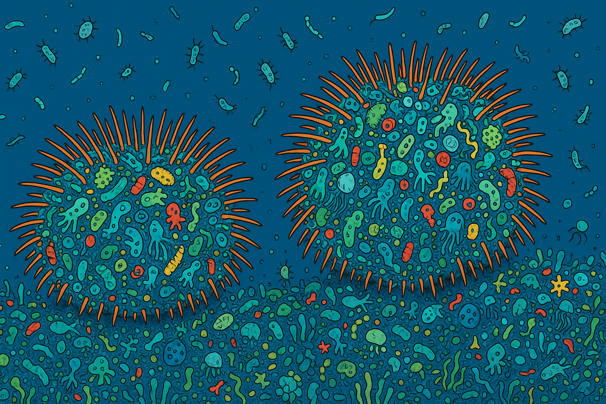
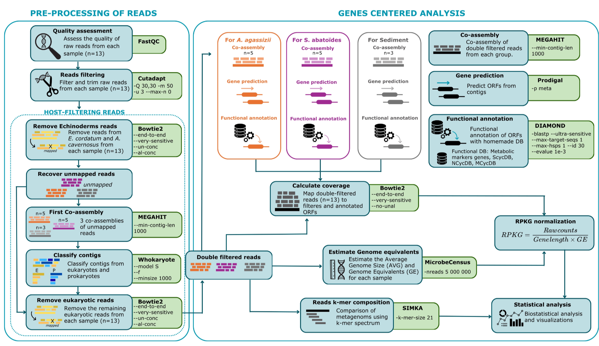
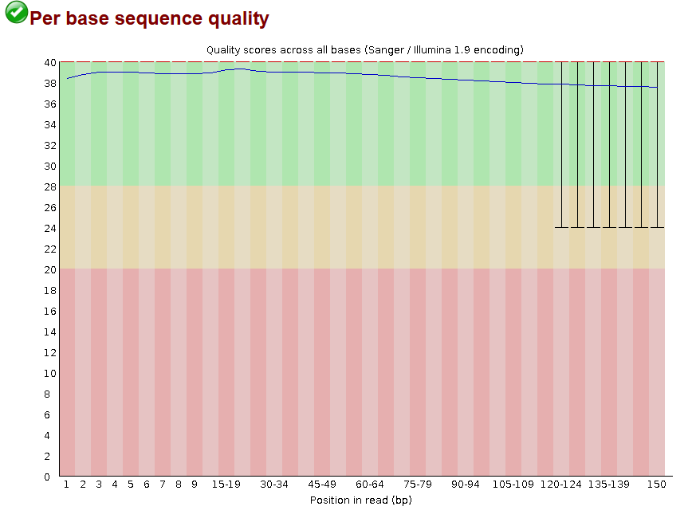

Metagenomic Bioinformatics Workflow
This repository contains the metagenomic bioinformatics workflow used in the study “How to avoid competitive exclusion: a possible role of gut microbiota in niche differentiation between coexisting species” Delleuze et al., 2026 in revision.
This workflow was developed with reproducibility and accessibility in mind. Detailed explanations, commands, and annotations are provided throughout the pipeline to facilitate its use by researchers with limited experience in bioinformatics, particularly those learning metagenomic data analysis.
As a self-learning researcher during the development of this project, I aimed to document each step as clearly as possible so that others facing similar challenges can more easily understand and reproduce the analyses.
This workflow is based on Sergio Guajardo-Leiva’s workshop and has been adapted for multiple samples, enabling functional annotation of contigs.
The dataset used contains samples of intestinal tissue from Abatus agassizii (n=5), Schizocosmus abatoïdes (n=5) (formerly Tripylus abatoïdes) and marine sediment (n=3).


Acknowledgements
All analyses were performed using computational resources provided by the National Laboratory for High Performance Computing (NLHPC), Chile (CCSS210001). Their infrastructure and support were essential for the completion of this work.
Notes:
- Throughout this workflow, Abatus refers to Abatus agassizii, and Tripylus refers to Schizocosmus abatoïdes (formerly Tripylus abatoïdes).
- In the document, scripts are highlighted in blue, while explanatory annotations are shown in orange.
- Several tools (e.g., Simka, Samtools, MetaBAT2) were installed in Conda environments. Before submitting jobs with `sbatch script.sh`, the corresponding Conda environment must be activated. If using software modules available through NLHPC, the required modules should be loaded before running the commands.
- ChatGPT (OpenAI) was used to assist in code optimization and script refinement. All analyses, parameter choices, and workflow validation were performed by the author.
Credits: Mélanie Delleuze De Prada
Table of contents
Pre-processing of the readings
0. Data preparation
Transfer files to the cluster
We use scp to transfer all the raw files from the raw reads of our samples.
# For all samples
scp -P port_number /input_directory/*.fq.gz /output_directory
# Extract files
gunzip /output_directory/*.fq.gz
1. Quality control with FastQC
Quality control with FastQC
The first step is to assess the quality of our raw data; we do this using FastQC.
First, we create a directory for the FastQC results.
mkdir /1.fastqcWe create a SLURM script file to run FastQC:
#!/bin/bash
#---------------Script SBATCH - NLHPC ----------------
#SBATCH -J Fastqc_all #task name
#SBATCH -p general #partitin to use
#SBATCH -n 1 #number of cores
#SBATCH -c 10 #number of cores/CPU
#SBATCH --mem-per-cpu=4090 #memory por CPU
#SBATCH -t 1-02:35:00 #maximum task execution time in SLURM
#SBATCH --mail-user= #your user mail
#SBATCH --mail-type=ALL
#SBATCH -o Fastqc_all_%j.err.out
#SBATCH -e Fastqc_all_%j.err.out
#-----------------Toolchain---------------------------
ml purge #clean modules
ml intel/2022.00
# ----------------Modulos----------------------------
ml FastQC/0.11.9-Java-11 Perl/5.34.0 #load the necessary modules
# ----------------Comando--------------------------
export OMP_PLACES=cores
fastqc -o /1.fastqc -t 10 /0.data/*.fqParameters used:
-t number of threads to use
-o output directory
input/path input directoryTo run the script we use :
sbatch fastqc.script.shWe download with scp the FastQC results to our local computer so that we can view them.
scp port_number /1.fastqc/*.html "/directory/local/computer/"For each file (forward and reverse), an HTML file is generated containing the results and a quality analysis.


2. Filtering and Trimming with Cutadapt
Filter the reads using Cutadapt
We use Cutadapt to perform high-quality filtering and trimming of the raw reads, based on the results from fastQC.
We created a script to run Cutadapt on all the samples:
Note: this script could have been optimised using a for loop: *file .fq in directory… do cutadapt function.
#!/bin/bash
#---------------Script SBATCH - NLHPC ----------------
#SBATCH -J Cutadapt_all
#SBATCH -p main
#SBATCH -n 1
#SBATCH -c 12
#SBATCH --mem-per-cpu=2839
#SBATCH --mail-type=ALL
#SBATCH -o Cutadapt_all_%j.err.out
#SBATCH -e Cutadapt_all_%j.err.out
#-----------------Toolchain---------------------------
ml purge
ml aocc/4.2.0
# ----------------Modulos----------------------------
ml py-cutadapt/4.7-zen4-j
# ----------------Comando--------------------------
export OMP_PLACES=cores
#the commands for each forward and reverse sample (this could be better implemented using a for loop)
cutadapt -j 12 -q 30,30 -Q 30,30 -m 50 -u 3 --max-n 0 -o /home/mdelleuze/metaG/2.trimed/Ab_GT16_1_trimed1.fq -p /home/mdelleuze/metaG/2.trimed/Ab_GT16_2_trimed2.fq /home/mdelleuze/metaG/0.data/Ab_GT16_1.fq /home/mdelleuze/metaG/0.data/Ab_GT16_2.fq
cutadapt -j 12 -q 30,30 -Q 30,30 -m 50 -u 3 --max-n 0 -o /home/mdelleuze/metaG/2.trimed/Ab_GT17_1_trimed1.fq -p /home/mdelleuze/metaG/2.trimed/Ab_GT17_2_trimed2.fq /home/mdelleuze/metaG/0.data/Ab_GT17_1.fq /home/mdelleuze/metaG/0.data/Ab_GT17_2.fq
cutadapt -j 12 -q 30,30 -Q 30,30 -m 50 -u 3 --max-n 0 -o /home/mdelleuze/metaG/2.trimed/Ab_GT19_1_trimed1.fq -p /home/mdelleuze/metaG/2.trimed/Ab_GT19_2_trimed2.fq /home/mdelleuze/metaG/0.data/Ab_GT19_1.fq /home/mdelleuze/metaG/0.data/Ab_GT19_2.fq
cutadapt -j 12 -q 30,30 -Q 30,30 -m 50 -u 3 --max-n 0 -o /home/mdelleuze/metaG/2.trimed/Ab_GT20_1_trimed1.fq -p /home/mdelleuze/metaG/2.trimed/Ab_GT20_2_trimed2.fq /home/mdelleuze/metaG/0.data/Ab_GT20_1.fq /home/mdelleuze/metaG/0.data/Ab_GT20_2.fq
cutadapt -j 12 -q 30,30 -Q 30,30 -m 50 -u 3 --max-n 0 -o /home/mdelleuze/metaG/2.trimed/Ab_GT22_1_trimed1.fq -p /home/mdelleuze/metaG/2.trimed/Ab_GT22_2_trimed2.fq /home/mdelleuze/metaG/0.data/Ab_GT22_1.fq /home/mdelleuze/metaG/0.data/Ab_GT22_2.fq
cutadapt -j 12 -q 30,30 -Q 30,30 -m 50 -u 3 --max-n 0 -o /home/mdelleuze/metaG/2.trimed/sed10_1_trimed1.fq -p /home/mdelleuze/metaG/2.trimed/sed10_2_trimed2.fq /home/mdelleuze/metaG/0.data/sed10_1.fq /home/mdelleuze/metaG/0.data/sed10_2.fq
cutadapt -j 12 -q 30,30 -Q 30,30 -m 50 -u 3 --max-n 0 -o /home/mdelleuze/metaG/2.trimed/sed6_1_trimed1.fq -p /home/mdelleuze/metaG/2.trimed/sed6_2_trimed2.fq /home/mdelleuze/metaG/0.data/sed6_1.fq /home/mdelleuze/metaG/0.data/sed6_2.fq
cutadapt -j 12 -q 30,30 -Q 30,30 -m 50 -u 3 --max-n 0 -o /home/mdelleuze/metaG/2.trimed/sed7_1_trimed1.fq -p /home/mdelleuze/metaG/2.trimed/sed7_2_trimed2.fq /home/mdelleuze/metaG/0.data/sed7_1.fq /home/mdelleuze/metaG/0.data/sed7_2.fq
cutadapt -j 12 -q 30,30 -Q 30,30 -m 50 -u 3 --max-n 0 -o /home/mdelleuze/metaG/2.trimed/Tr_GT11_1_trimed1.fq -p /home/mdelleuze/metaG/2.trimed/Tr_GT11_2_trimed2.fq /home/mdelleuze/metaG/0.data/Tr_GT11_1.fq /home/mdelleuze/metaG/0.data/Tr_GT11_2.fq
cutadapt -j 12 -q 30,30 -Q 30,30 -m 50 -u 3 --max-n 0 -o /home/mdelleuze/metaG/2.trimed/Tr_GT4_1_trimed1.fq -p /home/mdelleuze/metaG/2.trimed/Tr_GT4_2_trimed2.fq /home/mdelleuze/metaG/0.data/Tr_GT4_1.fq /home/mdelleuze/metaG/0.data/Tr_GT4_2.fq
cutadapt -j 12 -q 30,30 -Q 30,30 -m 50 -u 3 --max-n 0 -o /home/mdelleuze/metaG/2.trimed/Tr_GT6_1_trimed1.fq -p /home/mdelleuze/metaG/2.trimed/Tr_GT6_2_trimed2.fq /home/mdelleuze/metaG/0.data/Tr_GT6_1.fq /home/mdelleuze/metaG/0.data/Tr_GT6_2.fq
cutadapt -j 12 -q 30,30 -Q 30,30 -m 50 -u 3 --max-n 0 -o /home/mdelleuze/metaG/2.trimed/Tr_GT7_1_trimed1.fq -p /home/mdelleuze/metaG/2.trimed/Tr_GT7_2_trimed2.fq /home/mdelleuze/metaG/0.data/Tr_GT7_1.fq /home/mdelleuze/metaG/0.data/Tr_GT7_2.fq
cutadapt -j 12 -q 30,30 -Q 30,30 -m 50 -u 3 --max-n 0 -o /home/mdelleuze/metaG/2.trimed/Tr_GT9_1_trimed1.fq -p /home/mdelleuze/metaG/2.trimed/Tr_GT9_2_trimed2.fq /home/mdelleuze/metaG/0.data/Tr_GT9_1.fq /home/mdelleuze/metaG/0.data/Tr_GT9_2.fq
Parameters used:
-j 12: Uses 12 cores to speed up the process
-q 30,30: Trims low-quality bases from the end of the reads (q30)
-Q 30,30: Applies the same quality filter at the start
-m 50: Discards reads shorter than 50 bp after trimming
-u 3: Removes the first 3 nucleotides from each read (this was determined based on FastQC results)
--max-n 0: Does not allow ambiguous bases (N)
-o/-p: Forward and reverse output filesWe run the command:
sbatch cutadapt.script.shWe can check the quality after trimming using FastQC again, by adapting the previous code to the new forward and reverse files processed by cutadapt.
Cutadapt results extracted from the log files:
| Sample | Total read pairs processed | Pairs too short | % Pairs too short | Pairs with N | % Pairs with N | Pairs passing filters | % Pairs passing filters | Total basepairs processed | Read 1 (bp) | Read 2 (bp) | Quality-trimmed (bp) | % Quality trimmed | Trimmed Read 1 (bp) | Trimmed Read 2 (bp) | Total written (bp) | % Total written | Written Read 1 (bp) | Written Read 2 (bp) |
| Ab_GT16 | 52,627,604 | 3,447,836 | 6.6% | 949,246 | 1.8% | 48,230,522 | 91.6% | 15,788,281,200 | 7,894,140,600 | 7,894,140,600 | 553,547,075 | 3.5% | 211,867,080 | 341,679,995 | 13,790,224,737 | 87.3% | 6,857,847,268 | 6,932,377,469 |
| Ab_GT17 | 53,860,369 | 3,464,799 | 6.4% | 923,026 | 1.7% | 49,472,544 | 91.9% | 16,158,110,700 | 8,079,055,350 | 8,079,055,350 | 556,815,826 | 3.4% | 213,140,892 | 343,674,934 | 14,152,514,041 | 87.6% | 7,037,551,523 | 7,114,962,518 |
| Ab_GT19 | 56,663,468 | 3,504,235 | 6.2% | 815,145 | 1.4% | 52,344,088 | 92.4% | 16,999,040,400 | 8,499,520,200 | 8,499,520,200 | 554,154,158 | 3.3% | 216,470,581 | 337,683,577 | 14,990,026,153 | 88.2% | 7,450,453,560 | 7,539,572,593 |
| Ab_GT20 | 57,047,237 | 3,531,611 | 6.2% | 803,027 | 1.4% | 52,712,599 | 92.4% | 17,114,171,100 | 8,557,085,550 | 8,557,085,550 | 543,017,905 | 3.2% | 206,209,865 | 336,808,040 | 15,110,985,682 | 88.3% | 7,512,201,879 | 7,598,783,803 |
| Ab_GT22 | 59,417,564 | 4,234,953 | 7.1% | 719,204 | 1.2% | 54,463,407 | 91.7% | 17,825,269,200 | 8,912,634,600 | 8,912,634,600 | 643,194,755 | 3.6% | 242,357,075 | 400,837,680 | 15,575,536,767 | 87.4% | 7,741,389,557 | 7,834,147,210 |
| Sed10 | 72,258,561 | 2,144,697 | 3.0% | 1,513,171 | 2.1% | 68,600,693 | 94.9% | 21,677,568,300 | 10,838,784,150 | 10,838,784,150 | 321,541,264 | 1.5% | 112,413,679 | 209,127,585 | 20,034,989,415 | 92.4% | 9,932,338,799 | 10,102,650,616 |
| Sed6 | 58,714,101 | 1,518,361 | 2.6% | 708,426 | 1.2% | 56,487,314 | 96.2% | 17,614,230,300 | 8,807,115,150 | 8,807,115,150 | 185,987,466 | 1.1% | 55,090,619 | 130,896,847 | 16,548,070,369 | 93.9% | 8,199,283,993 | 8,348,786,376 |
| Sed7 | 58,705,048 | 1,410,078 | 2.4% | 947,474 | 1.6% | 56,347,496 | 96.0% | 17,611,514,400 | 8,805,757,200 | 8,805,757,200 | 179,052,231 | 1.0% | 56,757,477 | 122,294,754 | 16,524,994,389 | 93.8% | 8,185,734,502 | 8,339,259,887 |
| Tr_GT11 | 69,020,261 | 5,051,545 | 7.3% | 1,372,990 | 2.0% | 62,595,726 | 90.7% | 20,706,078,300 | 10,353,039,150 | 10,353,039,150 | 1,154,935,192 | 5.6% | 483,413,874 | 671,521,318 | 17,599,854,120 | 85.0% | 8,762,703,233 | 8,837,150,887 |
| Tr_GT4 | 53,745,430 | 3,929,940 | 7.3% | 1,068,486 | 2.0% | 48,747,004 | 90.7% | 16,123,629,000 | 8,061,814,500 | 8,061,814,500 | 886,011,643 | 5.5% | 364,169,961 | 521,841,682 | 13,713,178,715 | 85.1% | 6,831,580,828 | 6,881,597,887 |
| Tr_GT6 | 56,619,465 | 3,937,897 | 7.0% | 997,198 | 1.8% | 51,684,370 | 91.3% | 16,985,839,500 | 8,492,919,750 | 8,492,919,750 | 862,903,543 | 5.1% | 353,381,540 | 509,522,003 | 14,582,823,308 | 85.9% | 7,260,363,171 | 7,322,460,137 |
| Tr_GT7 | 54,690,900 | 3,839,827 | 7.0% | 902,392 | 1.6% | 49,948,681 | 91.3% | 16,407,270,000 | 8,203,635,000 | 8,203,635,000 | 862,196,906 | 5.3% | 359,022,568 | 503,174,338 | 14,074,480,046 | 85.8% | 7,006,074,271 | 7,068,405,775 |
| Tr_GT9 | 59,039,445 | 4,233,095 | 7.2% | 1,167,597 | 2.0% | 53,638,753 | 90.9% | 17,711,833,500 | 8,855,916,750 | 8,855,916,750 | 888,425,285 | 5.0% | 356,264,992 | 532,160,293 | 15,169,817,434 | 85.6% | 7,552,962,911 | 7,616,854,523 |
Quantifying before and after
We can count the number of sequences before and after the cut to keep track. Using the following Bash script.
#!/bin/bash
#---------------Script SBATCH - NLHPC ----------------
#SBATCH -J Calcul_bases_secuencias
#SBATCH -p main
#SBATCH -n 1
#SBATCH -c 2
#SBATCH --mem-per-cpu=2839
#SBATCH --mail-user=melanie.delleuze@gmail.com
#SBATCH --mail-type=ALL
#SBATCH -o Calcul_bases_secuencias_%j.err.out
#SBATCH -e Calcul_bases_secuencias_%j.err.out
#-----------------Toolchain---------------------------
ml purge
ml aocc/4.2.0
# ----------------Modulos----------------------------
# ----------------Comando--------------------------
export OMP_PLACES=cores
# Specify the folders containing the original and cropped files
carpeta_original="/home/mdelleuze/metaG/0.data"
carpeta_recortado="/home/mdelleuze/metaG/2.trimed"
# Output file
archivo_salida="resultados_secuencias_bases.tsv"
# Write the table header
echo -e "Archivo\Secuencias_antes\tSecuencias_despues\tBases_antes\tBases_despues" > $archivo_salida
# Process each file in the original folder
for archivo in "$carpeta_original"/*.fq; do
# Get the base filename (without the folder and extension)
nombre_base=$(basename "$archivo" .fq)
# Determine the file extension of the cropped files based on the original
if [[ "$nombre_base" =~ _1$ ]]; then
sufijo_trimed="_trimed1"
elif [[ "$nombre_base" =~ _2$ ]]; then
sufijo_trimed="_trimed2"
else
echo "Archivo no reconocido: $nombre_base. Saltando..."
continue
fi
# Specify the paths of the original and cropped files
archivo_original="$carpeta_original/$nombre_base.fq"
archivo_recortado="$carpeta_recortado/${nombre_base}${sufijo_trimed}.fq"
# Check that both files exist
if [[ ! -f "$archivo_original" ]]; then
echo "Archivo original no encontrado: $archivo_original. Saltando..."
continue
fi
if [[ ! -f "$archivo_recortado" ]]; then
echo "Archivo recortado no encontrado: $archivo_recortado. Saltando..."
continue
fi
# Count the number of sequences before and after the cut
secuencias_antes=$(grep -c "^@" "$archivo_original")
secuencias_despues=$(grep -c "^@" "$archivo_recortado")
# Count the number of total bases before and after the cut
bases_antes=$(grep -A 1 "^@" "$archivo_original" | grep -v "^@" | grep -v "^+" | tr -d '\n' | wc -c)
bases_despues=$(grep -A 1 "^@" "$archivo_recortado" | grep -v "^@" | grep -v "^+" | tr -d '\n' | wc -c)
# Escribe los resultados en el archivo de salida
echo -e "$nombre_base\t$secuencias_antes\t$secuencias_despues\t$bases_antes\t$bases_despues" >> $archivo_salida
done
echo "Análisis completado. Resultados guardados en $archivo_salida"
Parámetros:
grep -c: Counts the number of lines that match a pattern.
‘^@’: Searches for lines beginning with the @ character. In a FASTQ file, lines beginning with @ are the sequence headers (i.e., read identifiers).
wc -l: Counts the total number of lines in the file.
awk “{print $1/4}”:
• awk: Processes the output of the previous command.
• $1/4: Divides the total number of lines by 4. This is done because in a FASTQ file each read is represented by 4 lines:
1. Header line (starts with @).
2. Nucleotide sequence.
3. Separator line (starts with +).
4. Base qualities.Results:
| File | Sequences_before | Sequences_after | Difference_sequences | Bases_before | Bases_after | Bases_difference |
| Ab_GT16_1 | 52,627,604 | 48,230,522 | 4,397,082 | 7,999,395,806 | 6,954,308,310 | 1,045,087,496 |
| Ab_GT16_2 | 52,627,604 | 48,230,522 | 4,397,082 | 7,999,395,806 | 7,028,838,511 | 970,557,295 |
| Ab_GT17_1 | 53,860,369 | 49,472,544 | 4,387,825 | 8,186,776,086 | 7,136,496,609 | 1,050,279,477 |
| Ab_GT17_2 | 53,860,369 | 49,472,544 | 4,387,825 | 8,186,776,086 | 7,213,907,604 | 972,868,482 |
| Ab_GT19_1 | 56,663,468 | 52,344,088 | 4,319,380 | 8,612,847,134 | 7,555,141,734 | 1,057,705,400 |
| Ab_GT19_2 | 56,663,468 | 52,344,088 | 4,319,380 | 8,612,847,134 | 7,644,260,767 | 968,586,367 |
| Ab_GT20_1 | 57,047,237 | 52,712,599 | 4,334,638 | 8,671,180,022 | 7,617,627,075 | 1,053,552,947 |
| Ab_GT20_2 | 57,047,237 | 52,712,599 | 4,334,638 | 8,671,180,022 | 7,704,208,999 | 966,971,023 |
| Ab_GT22_1 | 59,417,564 | 54,463,407 | 4,954,157 | 9,031,469,726 | 7,850,316,369 | 1,181,153,357 |
| Ab_GT22_2 | 59,417,564 | 54,463,407 | 4,954,157 | 9,031,469,726 | 7,943,074,022 | 1,088,395,704 |
| sed10_1 | 72,258,561 | 68,600,693 | 3,657,868 | 10,983,301,270 | 10,069,540,183 | 913,761,087 |
| sed10_2 | 72,258,561 | 68,600,693 | 3,657,868 | 10,983,301,270 | 10,239,852,000 | 743,449,270 |
| sed6_1 | 58,714,101 | 56,487,314 | 2,226,787 | 8,924,543,350 | 8,312,258,619 | 612,284,731 |
| sed6_2 | 58,714,101 | 56,487,314 | 2,226,787 | 8,924,543,350 | 8,461,761,002 | 462,782,348 |
| sed7_1 | 58,705,048 | 56,347,496 | 2,357,552 | 8,923,167,294 | 8,298,429,492 | 624,737,802 |
| sed7_2 | 58,705,048 | 56,347,496 | 2,357,552 | 8,923,167,294 | 8,451,954,877 | 471,212,417 |
| Tr_GT11_1 | 69,020,261 | 62,595,726 | 6,424,535 | 10,491,079,670 | 8,887,894,683 | 1,603,184,987 |
| Tr_GT11_2 | 69,020,261 | 62,595,726 | 6,424,535 | 10,491,079,670 | 8,962,342,337 | 1,528,737,333 |
| Tr_GT4_1 | 53,745,430 | 48,747,004 | 4,998,426 | 8,169,305,358 | 6,929,074,834 | 1,240,230,524 |
| Tr_GT4_2 | 53,745,430 | 48,747,004 | 4,998,426 | 8,169,305,358 | 6,979,091,893 | 1,190,213,465 |
| Tr_GT6_1 | 56,619,465 | 51,684,370 | 4,935,095 | 8,606,158,678 | 7,363,731,909 | 1,242,426,769 |
| Tr_GT6_2 | 56,619,465 | 51,684,370 | 4,935,095 | 8,606,158,678 | 7,425,828,875 | 1,180,329,803 |
| Tr_GT7_1 | 54,690,900 | 49,948,681 | 4,742,219 | 8,313,016,798 | 7,105,971,631 | 1,207,045,167 |
| Tr_GT7_2 | 54,690,900 | 49,948,681 | 4,742,219 | 8,313,016,798 | 7,168,303,135 | 1,144,713,663 |
| Tr_GT9_1 | 59,039,445 | 53,638,753 | 5,400,692 | 8,973,995,638 | 7,660,240,415 | 1,313,755,223 |
| Tr_GT9_2 | 59,039,445 | 53,638,753 | 5,400,692 | 8,973,995,638 | 7,724,132,027 | 1,249,863,611 |
3. Filter reads from Echinoidea and Eukaryota
Download reference data and perform mapping with Bowtie2
In order to remove the host reads, the ideal approach is to use the reference genome for the species and extract the reads that map to that genome. However, in our case, there is no reference genome for A. agassizii or S. abatoïdes. Therefore, the reference genome of the closest species is used; in this case, we used the reference genome of Echinocardium cordatum, an irregular sea urchin of the same order as Abatus and Schizocosmus.
We also used the Abatus cavernosus contigs from a preliminary assembly carried out by Carolina Márquez (unpublished data).
We convert fq files to fastas.
#!/bin/bash
#---------------Script SBATCH - NLHPC ----------------
#SBATCH -J fq2fasta
#SBATCH -p general
#SBATCH -n 1
#SBATCH -c 1
#SBATCH --mem-per-cpu=100
#SBATCH --mail-type=ALL
#SBATCH -o fq2fasta_%j.err.out
#SBATCH -e fq2fasta_%j.err.out
#-----------------Toolchain---------------------------
ml purge
ml intel/2022.00
# ----------------Módulos----------------------------
ml intel-compilers/2022.0.1 impi/2021.5.0 seqtk/1.3
# Folder with fq files
cd /home/mdelleuze/metaG/2.trimed || exit
#Carpeta para los outputs
/home/mdelleuze/metaG/2.blast_a_cavernosus
# Browse all fq
for fq in *.fq; do
# Convertir a fasta
seqtk seq -a "$fq" > "/home/mdelleuze/metaG/2.blast_a_cavernosus/${fq%.fq}.fasta"
echo "Convertido $fq -> /home/mdelleuze/metaG/2.blast_a_cavernosus/${fq%.fq}.fasta"
done
echo "¡Conversión completa!"Now we download the genome of Echinocardium cordatum from NCBI (1 scaffold y 1 chromosome). We activate our conda environment (my_envi), which contains datasets.
conda activate my_envi
datasets download genome accession GCA_965644145.1 --include gff3,rna,cds,protein,genome,seq-report
datasets download genome accession GCA_965644095.1 --include gff3,rna,cds,protein,genome,seq-reportOnce downloaded, we need to join the two files together.
cat GCA_965644095/ncbi_dataset/data/GCA_965644095.1/GCA_965644095.1_eeEchCord2.hap2.1_genomic.fna \
GCA_965644145/ncbi_dataset/data/GCA_965644145.1/GCA_965644145.1_eeEchCord2.hap1.1_genomic.fna \
> E_cordatum_genome.fnaAnd now we’re adding the Abatus cavernosus contigs to create a more comprehensive FASTA file. First, we rename the headers of the A. cavernosus sequences and concatenate them again.
#Rename
sed 's/^>/>Acav_/' /home/mdelleuze/metaG/0.contigs_Abatus_cavernosus/LG5_wen_asm.minia.contigs.fa \
> LG5_wen_asm.minia.contigs_renamed.fa
#Concatenate
cat E_cordatum_genome.fna LG5_wen_asm.minia.contigs_renamed.fa > combined_Ecordatum_Acavernosus.fnaWe can now proceed with the mapping using Bowtie2.
#!/bin/bash
#---------------Script SBATCH - NLHPC ----------------
#SBATCH -J bowtie2_Ecordatum_Acavernosus
#SBATCH -p general
#SBATCH -n 1
#SBATCH -c 10
#SBATCH --mem-per-cpu=6000
#SBATCH --mail-type=ALL
#SBATCH -o bowtie2_Ecordatum_Acavernosus_%j.err.out
#SBATCH -e bowtie2_Ecordatum_Acavernosus_%j.err.out
#-----------------Toolchain---------------------------
ml purge
ml intel/2022.00
#-----------------Modules------------------------------
ml Bowtie2/2.4.5
# ----------------Variables----------------------------
DATA_DIR="/home/mdelleuze/metaG/2.trimed"
REF="/home/mdelleuze/metaG/0.genomes/E.cordatum/combined_Ecordatum_Acavernosus.fna"
INDEX="/home/mdelleuze/metaG/0.genomes/E.cordatum/Ecordatum_Acavernosus_index"
output_dir="/home/mdelleuze/metaG/2.blast_Ecordatum_Acavernosus_bowtie"
# Index construction
if [ ! -f "${INDEX}.1.bt2" ]; then
echo "Construyendo índice de Bowtie2..."
bowtie2-build "$REF" "$INDEX"
fi
# Create output folders
MAPPED_DIR="${output_dir}/mapped_reads"
UNMAPPED_DIR="${output_dir}/unmapped_reads"
mkdir -p "$MAPPED_DIR" "$UNMAPPED_DIR"
# Loop in each fastq
for fq1 in ${DATA_DIR}/*_1_trimed1.fq; do
sample=$(basename "$fq1" _1_trimed1.fq)
fq2="${DATA_DIR}/${sample}_2_trimed2.fq"
echo "Procesando muestra: $sample ..."
bowtie2 -x "$INDEX" -1 "$fq1" -2 "$fq2" -p 10 --verbose --end-to-end --very-sensitive \
--al-conc "${MAPPED_DIR}/${sample}_mapped.fq" \
--un-conc "${UNMAPPED_DIR}/${sample}_unmapped.fq" \
-S /dev/null
done
echo "Proceso finalizado. Reads mapeados en $MAPPED_DIR, no mapeados en $UNMAPPED_DIR"Parameters:
bowtie2-build: build the Bowtie index
$REF Reference FASTA file (genome or contigs).
$INDEX Base name for the index to be generated.
bowtie2: map the reads to the reference
-x ‘$INDEX’ Bowtie2 index (generated with bowtie2-build).
-1 ‘$fq1’ FASTQ file with forward reads (R1).
-2 ‘$fq2’ FASTQ file with reverse reads (R2).
-p 10 Use 10 cores/threads.
--verbose Display detailed information about the process.
--end-to-end Full end-to-end alignment (no trimming).
--very-sensitive High sensitivity → detects more alignments, slower.
--al-conc <file> Saves mapped read pairs (produces .1 and .2).
--un-conc <file> Saves unmapped read pairs (produces .1 and .2).
-S /dev/null Does not generate a SAM file (output is discarded).This places the reads that mapped to the reference in a “mapped” folder and those that did not map in an “unmapped” folder.
Results:
| Sample | Total_sequences | Total _sequences_mapped_to_contigs | Percentage_mapped | Total_sequences_unmapped_to_contigs | Percentage_unmapped |
| Ab_GT16_1 | 48,230,522 | 21,024,320 | 43.59 | 27,206,202 | 56.41 |
| Ab_GT16_2 | 48,230,522 | 21,024,320 | 43.59 | 27,206,202 | 56.41 |
| Ab_GT17_1 | 49,472,544 | 21,366,320 | 43.19 | 28,106,224 | 56.81 |
| Ab_GT17_2 | 49,472,544 | 21,366,320 | 43.19 | 28,106,224 | 56.81 |
| Ab_GT19_1 | 52,344,088 | 23,953,324 | 45.76 | 28,390,764 | 54.24 |
| Ab_GT19_2 | 52,344,088 | 23,953,324 | 45.76 | 28,390,764 | 54.24 |
| Ab_GT20_1 | 52,712,599 | 23,411,969 | 44.41 | 29,300,630 | 55.59 |
| Ab_GT20_2 | 52,712,599 | 23,411,969 | 44.41 | 29,300,630 | 55.59 |
| Ab_GT22_1 | 54,463,407 | 24,592,480 | 45.15 | 29,870,927 | 54.85 |
| Ab_GT22_2 | 54,463,407 | 24,592,480 | 45.15 | 29,870,927 | 54.85 |
| sed10_1 | 68,600,693 | 189,101 | 0.28 | 68,411,592 | 99.72 |
| sed10_2 | 68,600,693 | 189,101 | 0.28 | 68,411,592 | 99.72 |
| sed6_1 | 56,487,314 | 38,716 | 0.07 | 56,448,598 | 99.93 |
| sed6_2 | 56,487,314 | 38,716 | 0.07 | 56,448,598 | 99.93 |
| sed7_1 | 56,347,496 | 21,633 | 0.04 | 56,325,863 | 99.96 |
| sed7_2 | 56,347,496 | 21,633 | 0.04 | 56,325,863 | 99.96 |
| Tr_GT11_1 | 62,595,726 | 25,073,391 | 40.06 | 37,522,335 | 59.94 |
| Tr_GT11_2 | 62,595,726 | 25,073,391 | 40.06 | 37,522,335 | 59.94 |
| Tr_GT4_1 | 48,747,004 | 20,054,574 | 41.14 | 28,692,430 | 58.86 |
| Tr_GT4_2 | 48,747,004 | 20,054,574 | 41.14 | 28,692,430 | 58.86 |
| Tr_GT6_1 | 51,684,370 | 21,686,707 | 41.96 | 29,997,663 | 58.04 |
| Tr_GT6_2 | 51,684,370 | 21,686,707 | 41.96 | 29,997,663 | 58.04 |
| Tr_GT7_1 | 49,948,681 | 20,976,625 | 42.00 | 28,972,056 | 58.00 |
| Tr_GT7_2 | 49,948,681 | 20,976,625 | 42.00 | 28,972,056 | 58.00 |
| Tr_GT9_1 | 53,638,753 | 19,867,119 | 37.04 | 33,771,634 | 62.96 |
| Tr_GT9_2 | 53,638,753 | 19,867,119 | 37.04 | 33,771,634 | 62.96 |
Co-assemble unmapped reads with Megahit
We will use megahit for co-assembly
We use the reads that did not map to the E. cordatum genome and the A. cavernosus contigs, and perform group-based co-assembly (Abatus, Tripylus, Sediment)
#!/bin/bash
#---------------Script SBATCH - NLHPC ----------------
#SBATCH -J megahit_coassemblies_removed_Ecor_Acav
#SBATCH -p general
#SBATCH -n 1
#SBATCH -c 20
#SBATCH --mem-per-cpu=3000
#SBATCH --mail-type=ALL
#SBATCH -o megahit_coassemblies_removed_Ecor_Acav_%j.err.out
#SBATCH -e megahit_coassemblies_removed_Ecor_Acav_%j.err.out
#-----------------Toolchain---------------------------
ml purge
ml intel/2022.00
# ----------------Modulos----------------------------
ml GCCcore/11.2.0 MEGAHIT/1.2.9
# ----------------Comando--------------------------
export OMP_PLACES=cores
# Co-assembly Abatus samples
megahit -m 10e9 -t 20 --min-contig-len 1000 \
-1 /home/mdelleuze/metaG/2.blast_Ecordatum_Acavernosus_bowtie/unmapped_reads/Ab_GT16_unmapped.1.fq,/home/mdelleuze/metaG/2.blast_Ecordatum_Acavernosus_bowtie/unmapped_reads/Ab_GT17_unmapped.1.fq,/home/mdelleuze/metaG/2.blast_Ecordatum_Acavernosus_bowtie/unmapped_reads/Ab_GT19_unmapped.1.fq,/home/mdelleuze/metaG/2.blast_Ecordatum_Acavernosus_bowtie/unmapped_reads/Ab_GT20_unmapped.1.fq,/home/mdelleuze/metaG/2.blast_Ecordatum_Acavernosus_bowtie/unmapped_reads/Ab_GT22_unmapped.1.fq \
-2 /home/mdelleuze/metaG/2.blast_Ecordatum_Acavernosus_bowtie/unmapped_reads/Ab_GT16_unmapped.2.fq,/home/mdelleuze/metaG/2.blast_Ecordatum_Acavernosus_bowtie/unmapped_reads/Ab_GT17_unmapped.2.fq,/home/mdelleuze/metaG/2.blast_Ecordatum_Acavernosus_bowtie/unmapped_reads/Ab_GT19_unmapped.2.fq,/home/mdelleuze/metaG/2.blast_Ecordatum_Acavernosus_bowtie/unmapped_reads/Ab_GT20_unmapped.2.fq,/home/mdelleuze/metaG/2.blast_Ecordatum_Acavernosus_bowtie/unmapped_reads/Ab_GT22_unmapped.2.fq \
-o /home/mdelleuze/metaG/2.blast_Ecordatum_Acavernosus_bowtie/3.coassembly/Abatus_coassembly
# Co-assembly sediment samples
megahit -m 10e9 -t 20 --min-contig-len 1000 \
-1 /home/mdelleuze/metaG/2.blast_Ecordatum_Acavernosus_bowtie/unmapped_reads/sed6_unmapped.1.fq,/home/mdelleuze/metaG/2.blast_Ecordatum_Acavernosus_bowtie/unmapped_reads/sed7_unmapped.1.fq,/home/mdelleuze/metaG/2.blast_Ecordatum_Acavernosus_bowtie/unmapped_reads/sed10_unmapped.1.fq \
-2 /home/mdelleuze/metaG/2.blast_Ecordatum_Acavernosus_bowtie/unmapped_reads/sed6_unmapped.2.fq,/home/mdelleuze/metaG/2.blast_Ecordatum_Acavernosus_bowtie/unmapped_reads/sed7_unmapped.2.fq,/home/mdelleuze/metaG/2.blast_Ecordatum_Acavernosus_bowtie/unmapped_reads/sed10_unmapped.2.fq \
-o /home/mdelleuze/metaG/2.blast_Ecordatum_Acavernosus_bowtie/3.coassembly/Sediment_coassembly
# Co-assembly Tripylus samples
megahit -m 10e9 -t 20 --min-contig-len 1000 \
-1 /home/mdelleuze/metaG/2.blast_Ecordatum_Acavernosus_bowtie/unmapped_reads/Tr_GT4_unmapped.1.fq,/home/mdelleuze/metaG/2.blast_Ecordatum_Acavernosus_bowtie/unmapped_reads/Tr_GT6_unmapped.1.fq,/home/mdelleuze/metaG/2.blast_Ecordatum_Acavernosus_bowtie/unmapped_reads/Tr_GT7_unmapped.1.fq,/home/mdelleuze/metaG/2.blast_Ecordatum_Acavernosus_bowtie/unmapped_reads/Tr_GT9_unmapped.1.fq,/home/mdelleuze/metaG/2.blast_Ecordatum_Acavernosus_bowtie/unmapped_reads/Tr_GT11_unmapped.1.fq \
-2 /home/mdelleuze/metaG/2.blast_Ecordatum_Acavernosus_bowtie/unmapped_reads/Tr_GT4_unmapped.2.fq,/home/mdelleuze/metaG/2.blast_Ecordatum_Acavernosus_bowtie/unmapped_reads/Tr_GT6_unmapped.2.fq,/home/mdelleuze/metaG/2.blast_Ecordatum_Acavernosus_bowtie/unmapped_reads/Tr_GT7_unmapped.2.fq,/home/mdelleuze/metaG/2.blast_Ecordatum_Acavernosus_bowtie/unmapped_reads/Tr_GT9_unmapped.2.fq,/home/mdelleuze/metaG/2.blast_Ecordatum_Acavernosus_bowtie/unmapped_reads/Tr_GT11_unmapped.2.fq \
-o /home/mdelleuze/metaG/2.blast_Ecordatum_Acavernosus_bowtie/3.coassembly/Tripylus_coassemblyParameters :
-m 10e9: Maximum memory (10 GB)
-t 20: 20 threads
--min-contig-len 1000: Minimum contig length (1000 bp)
-1: Forward files (comma-separated)
-2: Reverse files (same order as forward)
-o: Output directoryResults:
| Coassembly | n_contigs | total_bp | min_length | max_bp | average_bp | N50 |
| Final_Contigs_Abatus | 325,903 | 532,844,217 | 1,000 | 31,256 | 1,634 | 1,636 |
| Final_Contigs_Sediment | 621,237 | 1,609,104,906 | 1,000 | 332,236 | 2,590 | 3,104 |
| Final_Contigs_Tripylus | 343,897 | 568,405,086 | 1,000 | 22,703 | 1,652 | 1,656 |
Use Whokaryote to classify contigs
Whokaryote classifies contigs as prokaryotic or eukaryotic based on characteristics such as gene density, gene length, and the presence of eukaryotic signatures (Pronk y Medema, 2022).
The first step is to install whokaryote in a new conda environment.
conda create -c bioconda -n whokaryote whokaryote
conda activate whokaryoteNow we can run Whokaryote in our conda environment
#!/bin/bash
#---------------Script SBATCH - NLHPC ----------------
#SBATCH -J whokaryote_contigs
#SBATCH -p general
#SBATCH -n 1
#SBATCH -c 6
#SBATCH --mem-per-cpu=1000
#SBATCH --mail-type=ALL
#SBATCH -o whokaryote_contigs_%j.err.out
#SBATCH -e whokaryote_contigs_%j.err.out
#-----------------Toolchain---------------------------
ml purge
cd /home/mdelleuze/metaG/2.blast_Ecordatum_Acavernosus_bowtie/3.coassembly/
whokaryote.py \
--contigs /home/mdelleuze/metaG/2.blast_Ecordatum_Acavernosus_bowtie/3.coassembly/all_final_contigs.fa \
--outdir /home/mdelleuze/metaG/2.blast_Ecordatum_Acavernosus_bowtie/3.coassembly/3.whokaryote_filtering \
--model S \
--f \
--minsize 1000Parámetros:
--contigs Specify your FASTA file containing the contigs (here, the FASTA file is a concatenation of all the contigs)
--outdir output directory
--model S Use Whokaryote's “standalone” model S or T
--f Create separate FASTA by organisms type
--minsize 1000 minimum contig size of 1000 bpResults:
| Fasta | Total_sequences | Eukaryotes | Prokaryotes | Unclassified |
| Final_Contigs_Abatus_Tripylus_Sediment | 1,291,037 | 378,169 | 298,912 | 613,956 |
About 30% of the contigs are eukaryotic.
Now we need to map the reads to those contigs, just as we did in the first filtering step.
Map reads to eukaryotic contigs using Bowtie and retrieve double-filtered reads
Now we can map the unmapped reads from the beginning to the eukaryotic contigs and retrieve the unmapped reads again. It is the same script used for the first mapping with Bowtie, adapted to the new reference (eukaryotic contigs).
#!/bin/bash
#---------------Script SBATCH - NLHPC ----------------
#SBATCH -J bowtie2_eucaryote
#SBATCH -p general
#SBATCH -n 1
#SBATCH -c 10
#SBATCH --mem-per-cpu=600
#SBATCH --mail-type=ALL
#SBATCH -o bowtie2_eucaryote_%j.err.out
#SBATCH -e bowtie2_eucaryote_%j.err.out
#-----------------Toolchain---------------------------
ml purge
ml intel/2022.00
#-----------------Modules------------------------------
ml Bowtie2/2.4.5
# ----------------Variables----------------------------
DATA_DIR="/home/mdelleuze/metaG/2.blast_Ecordatum_Acavernosus_bowtie/unmapped_reads"
REF="/home/mdelleuze/metaG/2.blast_Ecordatum_Acavernosus_bowtie/3.coassembly/3.whokaryote_filtering/eukaryotes.fasta"
INDEX="/home/mdelleuze/metaG/2.blast_Ecordatum_Acavernosus_bowtie/3.coassembly/3.whokaryote_filtering/eukaryotes_index"
output_dir="/home/mdelleuze/metaG/2.blast_Ecordatum_Acavernosus_bowtie/3.coassembly/3.whokaryote_filtering/filtering_reads"
# Build index (first time only)
if [ ! -f "${INDEX}.1.bt2" ]; then
echo "Construyendo índice de Bowtie2..."
bowtie2-build "$REF" "$INDEX"
fi
# Create outputs folders
MAPPED_DIR="${output_dir}/mapped_reads"
UNMAPPED_DIR="${output_dir}/unmapped_reads"
mkdir -p "$MAPPED_DIR" "$UNMAPPED_DIR"
# Loop for all fastq
for fq1 in ${DATA_DIR}/*_unmapped.1.fq; do
sample=$(basename "$fq1" _unmapped.1.fq)
fq2="${DATA_DIR}/${sample}_unmapped.2.fq"
echo "Procesando muestra: $sample ..."
bowtie2 -x "$INDEX" -1 "$fq1" -2 "$fq2" -p 10 --verbose --end-to-end --very-sensitive \
--al-conc "${MAPPED_DIR}/${sample}_mapped.fq" \
--un-conc "${UNMAPPED_DIR}/${sample}_unmapped.fq" \
-S /dev/null
done
echo "Proceso finalizado. Reads mapeados en $MAPPED_DIR, no mapeados en $UNMAPPED_DIR"Results:
| Sample | Total sequences incial (raw) | Total sequences unmapped first filter E. cordatum and A. cavernosus | Total sequenes mapped whokaryote | Percentage | Total sequences unmapped whokaryote | Percentage |
| Ab_GT16_1 | 48,230,522 | 27,206,202 | 10,478,935 | 38.52 | 16,727,267 | 61.48 |
| Ab_GT16_2 | 48,230,522 | 27,206,202 | 10,478,935 | 38.52 | 16,727,267 | 61.48 |
| Ab_GT17_1 | 49,472,544 | 28,106,224 | 10,844,416 | 38.58 | 17,261,808 | 61.42 |
| Ab_GT17_2 | 49,472,544 | 28,106,224 | 10,844,416 | 38.58 | 17,261,808 | 61.42 |
| Ab_GT19_1 | 52,344,088 | 28,390,764 | 10,909,443 | 38.43 | 17,481,321 | 61.57 |
| Ab_GT19_2 | 52,344,088 | 28,390,764 | 10,909,443 | 38.43 | 17,481,321 | 61.57 |
| Ab_GT20_1 | 52,712,599 | 29,300,630 | 11,371,527 | 38.81 | 17,929,103 | 61.19 |
| Ab_GT20_2 | 52,712,599 | 29,300,630 | 11,371,527 | 38.81 | 17,929,103 | 61.19 |
| Ab_GT22_1 | 54,463,407 | 29,870,927 | 11,484,205 | 38.45 | 18,386,722 | 61.55 |
| Ab_GT22_2 | 54,463,407 | 29,870,927 | 11,484,205 | 38.45 | 18,386,722 | 61.55 |
| sed10_1 | 68,600,693 | 68,411,592 | 10,863,280 | 15.88 | 57,548,312 | 84.12 |
| sed10_2 | 68,600,693 | 68,411,592 | 10,863,280 | 15.88 | 57,548,312 | 84.12 |
| sed6_1 | 56,487,314 | 56,448,598 | 7,238,608 | 12.82 | 49,209,990 | 87.18 |
| sed6_2 | 56,487,314 | 56,448,598 | 7,238,608 | 12.82 | 49,209,990 | 87.18 |
| sed7_1 | 56,347,496 | 56,325,863 | 7,540,423 | 13.39 | 48,785,440 | 86.61 |
| sed7_2 | 56,347,496 | 56,325,863 | 7,540,423 | 13.39 | 48,785,440 | 86.61 |
| Tr_GT11_1 | 62,595,726 | 37,522,335 | 16,840,741 | 44.88 | 20,681,594 | 55.12 |
| Tr_GT11_2 | 62,595,726 | 37,522,335 | 16,840,741 | 44.88 | 20,681,594 | 55.12 |
| Tr_GT4_1 | 48,747,004 | 28,692,430 | 12,834,031 | 44.73 | 15,858,399 | 55.27 |
| Tr_GT4_2 | 48,747,004 | 28,692,430 | 12,834,031 | 44.73 | 15,858,399 | 55.27 |
| Tr_GT6_1 | 51,684,370 | 29,997,663 | 13,243,236 | 44.15 | 16,754,427 | 55.85 |
| Tr_GT6_2 | 51,684,370 | 29,997,663 | 13,243,236 | 44.15 | 16,754,427 | 55.85 |
| Tr_GT7_1 | 49,948,681 | 28,972,056 | 13,024,605 | 44.96 | 15,947,451 | 55.04 |
| Tr_GT7_2 | 49,948,681 | 28,972,056 | 13,024,605 | 44.96 | 15,947,451 | 55.04 |
| Tr_GT9_1 | 53,638,753 | 33,771,634 | 14,373,311 | 42.56 | 19,398,323 | 57.44 |
| Tr_GT9_2 | 53,638,753 | 33,771,634 | 14,373,311 | 42.56 | 19,398,323 | 57.44 |
4. Simka - k-mer composition of reads
Use Simka to compare metagenomes based on their k-mer content
Simka uses k-mer composition to calculate distances between metagenomes. First, we install Simka in a new Conda environment.
conda create -n simka_env -c bioconda -c conda-forge simka
conda activate simka_envNow we'll create a file that links each sample to each file, and since it's pair-ended, we need to include both files.
We created this in a text file in the NLHPC session using vim : reads_list.txt
Ab_GT16: /home/mdelleuze/metaG/2.blast_Ecordatum_Acavernosus_bowtie/3.coassembly/3.whokaryote_filtering/filtering_reads/unmapped_reads/Ab_GT16_unmapped.1.fq ; /home/mdelleuze/metaG/2.blast_Ecordatum_Acavernosus_bowtie/3.coassembly/3.whokaryote_filtering/filtering_reads/unmapped_reads/Ab_GT16_unmapped.2.fq
Ab_GT17: /home/mdelleuze/metaG/2.blast_Ecordatum_Acavernosus_bowtie/3.coassembly/3.whokaryote_filtering/filtering_reads/unmapped_reads/Ab_GT17_unmapped.1.fq ; /home/mdelleuze/metaG/2.blast_Ecordatum_Acavernosus_bowtie/3.coassembly/3.whokaryote_filtering/filtering_reads/unmapped_reads/Ab_GT17_unmapped.2.fq
Ab_GT19: /home/mdelleuze/metaG/2.blast_Ecordatum_Acavernosus_bowtie/3.coassembly/3.whokaryote_filtering/filtering_reads/unmapped_reads/Ab_GT19_unmapped.1.fq ; /home/mdelleuze/metaG/2.blast_Ecordatum_Acavernosus_bowtie/3.coassembly/3.whokaryote_filtering/filtering_reads/unmapped_reads/Ab_GT19_unmapped.2.fq
Ab_GT20: /home/mdelleuze/metaG/2.blast_Ecordatum_Acavernosus_bowtie/3.coassembly/3.whokaryote_filtering/filtering_reads/unmapped_reads/Ab_GT20_unmapped.1.fq ; /home/mdelleuze/metaG/2.blast_Ecordatum_Acavernosus_bowtie/3.coassembly/3.whokaryote_filtering/filtering_reads/unmapped_reads/Ab_GT20_unmapped.2.fq
Ab_GT22: /home/mdelleuze/metaG/2.blast_Ecordatum_Acavernosus_bowtie/3.coassembly/3.whokaryote_filtering/filtering_reads/unmapped_reads/Ab_GT22_unmapped.1.fq ; /home/mdelleuze/metaG/2.blast_Ecordatum_Acavernosus_bowtie/3.coassembly/3.whokaryote_filtering/filtering_reads/unmapped_reads/Ab_GT22_unmapped.2.fq
Tr_GT4: /home/mdelleuze/metaG/2.blast_Ecordatum_Acavernosus_bowtie/3.coassembly/3.whokaryote_filtering/filtering_reads/unmapped_reads/Tr_GT4_unmapped.1.fq ; /home/mdelleuze/metaG/2.blast_Ecordatum_Acavernosus_bowtie/3.coassembly/3.whokaryote_filtering/filtering_reads/unmapped_reads/Tr_GT4_unmapped.2.fq
Tr_GT6: /home/mdelleuze/metaG/2.blast_Ecordatum_Acavernosus_bowtie/3.coassembly/3.whokaryote_filtering/filtering_reads/unmapped_reads/Tr_GT6_unmapped.1.fq ; /home/mdelleuze/metaG/2.blast_Ecordatum_Acavernosus_bowtie/3.coassembly/3.whokaryote_filtering/filtering_reads/unmapped_reads/Tr_GT6_unmapped.2.fq
Tr_GT7: /home/mdelleuze/metaG/2.blast_Ecordatum_Acavernosus_bowtie/3.coassembly/3.whokaryote_filtering/filtering_reads/unmapped_reads/Tr_GT7_unmapped.1.fq ; /home/mdelleuze/metaG/2.blast_Ecordatum_Acavernosus_bowtie/3.coassembly/3.whokaryote_filtering/filtering_reads/unmapped_reads/Tr_GT7_unmapped.2.fq
Tr_GT9: /home/mdelleuze/metaG/2.blast_Ecordatum_Acavernosus_bowtie/3.coassembly/3.whokaryote_filtering/filtering_reads/unmapped_reads/Tr_GT9_unmapped.1.fq ; /home/mdelleuze/metaG/2.blast_Ecordatum_Acavernosus_bowtie/3.coassembly/3.whokaryote_filtering/filtering_reads/unmapped_reads/Tr_GT9_unmapped.2.fq
Tr_GT11: /home/mdelleuze/metaG/2.blast_Ecordatum_Acavernosus_bowtie/3.coassembly/3.whokaryote_filtering/filtering_reads/unmapped_reads/Tr_GT11_unmapped.1.fq ; /home/mdelleuze/metaG/2.blast_Ecordatum_Acavernosus_bowtie/3.coassembly/3.whokaryote_filtering/filtering_reads/unmapped_reads/Tr_GT11_unmapped.2.fq
sed6: /home/mdelleuze/metaG/2.blast_Ecordatum_Acavernosus_bowtie/3.coassembly/3.whokaryote_filtering/filtering_reads/unmapped_reads/sed6_unmapped.1.fq ; /home/mdelleuze/metaG/2.blast_Ecordatum_Acavernosus_bowtie/3.coassembly/3.whokaryote_filtering/filtering_reads/unmapped_reads/sed6_unmapped.2.fq
sed7: /home/mdelleuze/metaG/2.blast_Ecordatum_Acavernosus_bowtie/3.coassembly/3.whokaryote_filtering/filtering_reads/unmapped_reads/sed7_unmapped.1.fq ; /home/mdelleuze/metaG/2.blast_Ecordatum_Acavernosus_bowtie/3.coassembly/3.whokaryote_filtering/filtering_reads/unmapped_reads/sed7_unmapped.2.fq
sed10: /home/mdelleuze/metaG/2.blast_Ecordatum_Acavernosus_bowtie/3.coassembly/3.whokaryote_filtering/filtering_reads/unmapped_reads/sed10_unmapped.1.fq ; /home/mdelleuze/metaG/2.blast_Ecordatum_Acavernosus_bowtie/3.coassembly/3.whokaryote_filtering/filtering_reads/unmapped_reads/sed10_unmapped.2.fqNow we run the script using Bash
#!/bin/bash
#--------------- Script SBATCH - NLHPC ----------------
#SBATCH -J simka_reads
#SBATCH -p general
#SBATCH -n 1
#SBATCH -c 16
#SBATCH --mem-per-cpu=4000
#SBATCH -t 5-24:00:00
#SBATCH --mail-type=ALL
#SBATCH -o simka_reads_%j.err.out
#SBATCH -e simka_reads_%j.err.out
#----------------- Modules ---------------------------
ml purge
ml intel/2022.00
cd /home/mdelleuze/metaG/2.blast_Ecordatum_Acavernosus_bowtie/3.coassembly/3.whokaryote_filtering/filtering_reads/unmapped_reads/simka_results
simka \
-in /home/mdelleuze/metaG/2.blast_Ecordatum_Acavernosus_bowtie/3.coassembly/3.whokaryote_filtering/filtering_reads/unmapped_reads/simka_results/reads_list.txt \
-out /home/mdelleuze/metaG/2.blast_Ecordatum_Acavernosus_bowtie/3.coassembly/3.whokaryote_filtering/filtering_reads/unmapped_reads/simka_results \
-out-tmp /home/mdelleuze/metaG/2.blast_Ecordatum_Acavernosus_bowtie/3.coassembly/3.whokaryote_filtering/filtering_reads/unmapped_reads/simka_results/simka_tmp \
-kmer-size 21 \
-nb-cores 16Parameters :
-in : input file containing the list of datasets (reads)
-out : outputs directory
-out-tmp : temporary files directory
-kmer-size 21 : k-mer size; 21 is the standard value for short reads
-nb-cores 16 : number of CPUs to useOnce the process is complete, the output consists of .csv files containing the distance matrices. We download them and open them in R for multivariate analysis and visualization.
scp -P port_number directory/*.gz "output\Simka"Gene-centered analisis
5. Co-assembly with Megahit
Co-assemble the double-filtered reads using Megahit
We can now use the reads that have been filtered twice (against the E. cordatum genome and A. cavernosus contigs, and against the eukaryotic contigs identified by Whokaryote).
We use Megahit for the co-assembly
#!/bin/bash
#---------------Script SBATCH - NLHPC ----------------
#SBATCH -J megahit_coassemblies_removed_Ecor_Acav_Euk
#SBATCH -p general
#SBATCH -n 1
#SBATCH -c 20
#SBATCH --mem-per-cpu=3000
#SBATCH --mail-type=ALL
#SBATCH -o megahit_coassemblies_removed_Ecor_Acav_Euk_%j.err.out
#SBATCH -e megahit_coassemblies_removed_Ecor_Acav_Euk_%j.err.out
#-----------------Toolchain---------------------------
ml purge
ml intel/2022.00
# ----------------Modulos----------------------------
ml GCCcore/11.2.0 MEGAHIT/1.2.9
# ----------------Comando--------------------------
export OMP_PLACES=cores
# Co-assembly Abatus samples
megahit -m 10e9 -t 20 --min-contig-len 1000 \
-1 /home/mdelleuze/metaG/2.blast_Ecordatum_Acavernosus_bowtie/3.coassembly/3.whokaryote_filtering/filtering_reads/unmapped_reads/Ab_GT16_unmapped.1.fq,/home/mdelleuze/metaG/2.blast_Ecordatum_Acavernosus_bowtie/3.coassembly/3.whokaryote_filtering/filtering_reads/unmapped_reads/Ab_GT17_unmapped.1.fq,/home/mdelleuze/metaG/2.blast_Ecordatum_Acavernosus_bowtie/3.coassembly/3.whokaryote_filtering/filtering_reads/unmapped_reads/Ab_GT19_unmapped.1.fq,/home/mdelleuze/metaG/2.blast_Ecordatum_Acavernosus_bowtie/3.coassembly/3.whokaryote_filtering/filtering_reads/unmapped_reads/Ab_GT20_unmapped.1.fq,/home/mdelleuze/metaG/2.blast_Ecordatum_Acavernosus_bowtie/3.coassembly/3.whokaryote_filtering/filtering_reads/unmapped_reads/Ab_GT22_unmapped.1.fq \
-2 /home/mdelleuze/metaG/2.blast_Ecordatum_Acavernosus_bowtie/3.coassembly/3.whokaryote_filtering/filtering_reads/unmapped_reads/Ab_GT16_unmapped.2.fq,/home/mdelleuze/metaG/2.blast_Ecordatum_Acavernosus_bowtie/3.coassembly/3.whokaryote_filtering/filtering_reads/unmapped_reads/Ab_GT17_unmapped.2.fq,/home/mdelleuze/metaG/2.blast_Ecordatum_Acavernosus_bowtie/3.coassembly/3.whokaryote_filtering/filtering_reads/unmapped_reads/Ab_GT19_unmapped.2.fq,/home/mdelleuze/metaG/2.blast_Ecordatum_Acavernosus_bowtie/3.coassembly/3.whokaryote_filtering/filtering_reads/unmapped_reads/Ab_GT20_unmapped.2.fq,/home/mdelleuze/metaG/2.blast_Ecordatum_Acavernosus_bowtie/3.coassembly/3.whokaryote_filtering/filtering_reads/unmapped_reads/Ab_GT22_unmapped.2.fq \
-o /home/mdelleuze/metaG/2.blast_Ecordatum_Acavernosus_bowtie/3.coassembly/3.whokaryote_filtering/4.new_coassembly/Abatus_coassembly
# Co-assembly sediment samples
megahit -m 10e9 -t 20 --min-contig-len 1000 \
-1 /home/mdelleuze/metaG/2.blast_Ecordatum_Acavernosus_bowtie/3.coassembly/3.whokaryote_filtering/filtering_reads/unmapped_reads/sed6_unmapped.1.fq,/home/mdelleuze/metaG/2.blast_Ecordatum_Acavernosus_bowtie/3.coassembly/3.whokaryote_filtering/filtering_reads/unmapped_reads/sed7_unmapped.1.fq,/home/mdelleuze/metaG/2.blast_Ecordatum_Acavernosus_bowtie/3.coassembly/3.whokaryote_filtering/filtering_reads/unmapped_reads/sed10_unmapped.1.fq \
-2 /home/mdelleuze/metaG/2.blast_Ecordatum_Acavernosus_bowtie/3.coassembly/3.whokaryote_filtering/filtering_reads/unmapped_reads/sed6_unmapped.2.fq,/home/mdelleuze/metaG/2.blast_Ecordatum_Acavernosus_bowtie/3.coassembly/3.whokaryote_filtering/filtering_reads/unmapped_reads/sed7_unmapped.2.fq,/home/mdelleuze/metaG/2.blast_Ecordatum_Acavernosus_bowtie/3.coassembly/3.whokaryote_filtering/filtering_reads/unmapped_reads/sed10_unmapped.2.fq \
-o /home/mdelleuze/metaG/2.blast_Ecordatum_Acavernosus_bowtie/3.coassembly/3.whokaryote_filtering/4.new_coassembly/Sediment_coassembly
# Co-assembly Tripylus samples
megahit -m 10e9 -t 20 --min-contig-len 1000 \
-1 /home/mdelleuze/metaG/2.blast_Ecordatum_Acavernosus_bowtie/3.coassembly/3.whokaryote_filtering/filtering_reads/unmapped_reads/Tr_GT4_unmapped.1.fq,/home/mdelleuze/metaG/2.blast_Ecordatum_Acavernosus_bowtie/3.coassembly/3.whokaryote_filtering/filtering_reads/unmapped_reads/Tr_GT6_unmapped.1.fq,/home/mdelleuze/metaG/2.blast_Ecordatum_Acavernosus_bowtie/3.coassembly/3.whokaryote_filtering/filtering_reads/unmapped_reads/Tr_GT7_unmapped.1.fq,/home/mdelleuze/metaG/2.blast_Ecordatum_Acavernosus_bowtie/3.coassembly/3.whokaryote_filtering/filtering_reads/unmapped_reads/Tr_GT9_unmapped.1.fq,/home/mdelleuze/metaG/2.blast_Ecordatum_Acavernosus_bowtie/3.coassembly/3.whokaryote_filtering/filtering_reads/unmapped_reads/Tr_GT11_unmapped.1.fq \
-2 /home/mdelleuze/metaG/2.blast_Ecordatum_Acavernosus_bowtie/3.coassembly/3.whokaryote_filtering/filtering_reads/unmapped_reads/Tr_GT4_unmapped.2.fq,/home/mdelleuze/metaG/2.blast_Ecordatum_Acavernosus_bowtie/3.coassembly/3.whokaryote_filtering/filtering_reads/unmapped_reads/Tr_GT6_unmapped.2.fq,/home/mdelleuze/metaG/2.blast_Ecordatum_Acavernosus_bowtie/3.coassembly/3.whokaryote_filtering/filtering_reads/unmapped_reads/Tr_GT7_unmapped.2.fq,/home/mdelleuze/metaG/2.blast_Ecordatum_Acavernosus_bowtie/3.coassembly/3.whokaryote_filtering/filtering_reads/unmapped_reads/Tr_GT9_unmapped.2.fq,/home/mdelleuze/metaG/2.blast_Ecordatum_Acavernosus_bowtie/3.coassembly/3.whokaryote_filtering/filtering_reads/unmapped_reads/Tr_GT11_unmapped.2.fq \
-o /home/mdelleuze/metaG/2.blast_Ecordatum_Acavernosus_bowtie/3.coassembly/3.whokaryote_filtering/4.new_coassembly/Tripylus_coassemblyParameters:
-m 10e9: Maximum memory (10 GB)
-t 20: 20 threads
--min-contig-len 1000: Minimum contig length (1000 bp)
-1: Forward files (comma-separated)
-2: Reverse files (same order as forward)
-o: Output directoryResults:
| Coassembly | n_contigs | total_bp | min_length | max_bp | average_bp | N50 |
| Final_Contigs_Abatus | 215,430 | 313,442,762 | 1,000 | 13,122 | 1,454 | 1,426 |
| Final_Contigs_Sediment | 467,506 | 1,235,986,434 | 1,000 | 332,236 | 2,643 | 3,304 |
| Final_Contigs_Tripylus | 229,024 | 336,383,645 | 1,000 | 19,962 | 1,468 | 1,441 |
6. Functional annotation of ORFs using a homemade database
Download the relevant databases and create a homemade database
First, we obtain a gene database in Fasta format. We download it to our computer and use scp to copy it to the cluster, or download it directly into our cluster session. The Greening Lab database by Lappan et al., 2023, contains one FASTA file per major metabolic pathway; we concatenated all the FASTA files into a single file. I used a concatenated database containing Greening Lab SCyc, NCyc, and MCyc.
#Downloading a database from GitHub: an example
git clone https://github.com/repository
#Sometimes FASTA files come in split ZIP files, so to convert them back to FASTA we need p7zip
#Load the modules:
ml GCCcore/11.2.0 p7zip/17.04
#Extract the FASTA file using:
7z x BaseDeDatos.zip
The SCyc, NCyc and MCyc fasta files contain homologous gene sequences to avoid false positives caused by a small database (see the associated papers). As we are going to concatenate these databases, the homologous sequences can be removed (there is no issue with a small database).
We now have our FASTA files for each database, but we need to add a database ID prefix before concatenating, as two different sequences may have the same ID (this happens with SCyc, NCyc and MCyc). We apply the following code:
#!/bin/bash
#SBATCH -J creating_DB_final
#SBATCH -p general
#SBATCH -n 1
#SBATCH -c 4
#SBATCH --mem-per-cpu=4090
#SBATCH --mail-type=ALL
#SBATCH -o creating_DB_final_%j.err.out
#SBATCH -e creating_DB_final_%j.err.out
#-----------------Toolchain---------------------------
ml purge
ml intel/2022.00
# ----------------Modulos----------------------------
# ----------------Comando----------------------------
export OMP_PLACES=cores
# originals files
SCYC="/home/mdelleuze/metaG/functions_db/SCycDB/SCycDB/SCycDB_2020Mar_filtered.faa"
NCYC="/home/mdelleuze/metaG/functions_db/NCycDB/NCyc/data/NCyc_100_2019Jul_filtered.faa"
MCYC="/home/mdelleuze/metaG/functions_db/MCycDB/MCycDB/MCycDB_2021_filtered.faa"
GREENING="/home/mdelleuze/metaG/functions_db/Greening_lab_metabolic_marker_gene_databases/metabolic_concatenated_genes.fa"
# working directory
cd /home/mdelleuze/metaG/functions_db/DB_Combined
# ---- create FASTA with prefix ----
awk '/^>/ {print ">SCyc_" substr($0,2); next} {print}' "$SCYC" > SCyc.prefixed.faa
awk '/^>/ {print ">NCyc_" substr($0,2); next} {print}' "$NCYC" > NCyc.prefixed.faa
awk '/^>/ {print ">MCyc_" substr($0,2); next} {print}' "$MCYC" > MCyc.prefixed.faa
awk '/^>/ {print ">GreeningLab_" substr($0,2); next} {print}' "$GREENING" > Greening.prefixed.faa
# ---- concatenate ----
cat SCyc.prefixed.faa NCyc.prefixed.faa MCyc.prefixed.faa Greening.prefixed.faa \
> concatenated_db_greening_scyc_ncyc_mcyc.faa
echo "Concatenation lista: concatenated_db_greening_scyc_ncyc_mcyc.faa"We now want to extract the homologous sequences that are not included in the txt file containing the sequence IDs. The id2gene.map files contain information on which sequence corresponds to which gene.
The following script was used to build the final database and its corresponding id2gene
# 1. Process Greening: remove only the species separator (_-_)
tail -n +2 /home/mdelleuze/metaG/functions_db/DB_Combined/id_gene_greening.txt | \
awk '{id=$1; sub(/_-.*/, "", id); print "GreeningLab_"id"\t"$2"\tGreening"}' > map_greening.tmp
# 2. Process MCyc: Column 1 = ID, Column 2 = Gene
awk '{print "MCyc_"$1"\t"$2"\tMCyc"}' /home/mdelleuze/metaG/functions_db/DB_Combined/id2gene_MCyc.map.txt > map_mcyc.tmp
# 3. Process NCyc y SCyc :Column 1 = ID, Column 2 = Gene
awk '{print "NCyc_"$1"\t"$2"\tNCyc"}' /home/mdelleuze/metaG/functions_db/DB_Combined/id2gene.map.2019Jul.NCyc.txt > map_ncyc.tmp
awk '{print "SCyc_"$1"\t"$2"\tSCyc"}' /home/mdelleuze/metaG/functions_db/DB_Combined/id2gene.2020Mar.map.SCyc.txt > map_scyc.tmp
# 4. Bring everything together in the Master Matrix
cat map_greening.tmp map_mcyc.tmp map_ncyc.tmp map_scyc.tmp > id2gene_master.txt
# 5. clean-up: Remove quotation marks and line breaks in Windows
sed -i 's/"//g; s/\r//g' id2gene_master.txtThis Python script then uses id2gene_master to filter the combined database of all sequences (Greening + Scyc + NCyc + MCyc). (It wasn’t that easy because there were many unusual characters and different ways of entering the ID, which led to discrepancies between the number of id2gene entries and the number of sequences.)
(For Python scripts, create a file called script.py using Vim and run it by typing python script.py)
import sys
# 1. Load master matrix
target_map = {}
print("Cargando matriz master...")
with open("id2gene_master.txt", "r") as f:
for line in f:
line = line.strip()
if not line: continue
parts = line.split()
if not parts: continue
id_full = parts[0]
if id_full not in target_map:
target_map[id_full] = []
target_map[id_full].append(line)
print(f"IDs únicos cargados de la matriz: {len(target_map)}")
# 2. Scan FASTA y save the best option (prioridad no-homolog)
fasta_db = {}
print("Escaneando FASTA combinado (esto puede tardar)...")
curr_header = ""
curr_seq = []
with open("db_combined_raw.faa", "r") as f:
for line in f:
line = line.strip()
if line.startswith(">"):
if curr_header:
# El ID en el FASTA es la primera palabra del header
fid = curr_header[1:].split()[0]
is_homo = "homolog ontology" in curr_header
# Lógica de prioridad: quedarnos con la versión que NO sea homóloga
if fid not in fasta_db or (not is_homo and "homolog ontology" in fasta_db[fid][0]):
fasta_db[fid] = (curr_header, "".join(curr_seq))
curr_header = line
curr_seq = []
else:
curr_seq.append(line)
if curr_header:
fid = curr_header[1:].split()[0]
fasta_db[fid] = (curr_header, "".join(curr_seq))
# 3. Smart Rescue Function for GreeningLab (sometimes IDs with GeneID_NUM_-_Species / GeneID_WP_NUM.1_Species ...
def get_match(id_master, fasta_keys):
if id_master in fasta_keys: return id_master
if "GreeningLab_" in id_master:
# Intento 1: Cortar en el separador original si quedó algún residuo
short = id_master.split('_-_')[0]
if short in fasta_keys: return short
# Intento 2: Recorte progresivo por guiones bajos
# Esto soluciona los casos tipo SdhA_FrdA-Especie
parts = id_master.split('_')
for i in range(len(parts), 1, -1):
candidate = "_".join(parts[:i])
if candidate in fasta_keys: return candidate
return None
# 4. Write synchronised results: an id2gene table and a FASTA file containing exactly the same IDs and sequence/ID numbers
print("Sincronizando y escribiendo archivos finales...")
with open("final_database.faa", "w") as fa_out, open("final_id2gene_matrix.txt", "w") as mat_out:
rescued_count = 0
# Recorremos la matriz original para mantener integridad
for id_m in target_map:
match_id = get_match(id_m, fasta_db)
if match_id:
header, seq = fasta_db[match_id]
fa_out.write(f"{header}\n{seq}\n")
# Escribimos todas las líneas asociadas a este ID (manejo de duplicados)
for original_line in target_map[id_m]:
mat_out.write(original_line + "\n")
rescued_count += 1
print(f"¡Hecho! Secuencias finales rescatadas: {rescued_count}")Execute
#To run the script above
python3 build_final_db.pyWe now have a database of 1,566,622 sequences corresponding to a total of 577 genes / db.
#Fasta of sequences
grep -c '^>' final_database.faa
1566622
#Table with ids
wc -l final_id2gene_matrix.txt
1566658 final_id2gene_matrix.txtThere are 36 more gene IDs in id2gene than in Fasta; this is because the same sequence ID is associated with different variants of the same gene (particularly in MCyc).
Example:
The ID MCyc_261856243 is associated with drfA1 in the id2gene table and with dfrA12 in another row; we have no way of identifying which of the two it is, so in the main table we will need to enter MCyc_261856243 as dfrA and remove the numbers that are variants of the same gene (R cleaning).
#To extract them:
grep -Fw -f <(awk '{print $1}' final_id2gene_matrix.txt | sort | uniq -d) final_id2gene_matrix.txt > duplicados_funcionales.txt
#to count
wc -l duplicados_funcionales.txt
72 duplicados_funcionales.txt # equal to 36 ids
head duplicados_funcionales.txt
#Gene_ID Gene DB
MCyc_ag:AAA92749 dfrA1 MCyc
MCyc_ag:AAA92749 dfrA10 MCyc
MCyc_261856243 dfrA1 MCyc
MCyc_261856243 dfrA12 MCyc
MCyc_91778189 dfrA1 MCyc
MCyc_91778189 dfrA12 MCyc
MCyc_1500897.JQNA01000002_gene2735 dfrA1 MCyc
MCyc_1500897.JQNA01000002_gene2735 dfrA12 MCyc
MCyc_1226325.HMPREF1548_01821 dfrA1 MCyc
MCyc_1226325.HMPREF1548_01821 dfrA12 MCyc
MCyc_1121105.ATXL01000017_gene1583 dfrA1 MCyc
MCyc_1121105.ATXL01000017_gene1583 dfrA12 MCyc
MCyc_ag:AAS66087 dfrA1 MCyc
MCyc_ag:AAS66087 dfrA12 MCyc
MCyc_sem:STMDT12_L00660 dfrA1 MCyc
MCyc_sem:STMDT12_L00660 dfrA12 MCyc
MCyc_kpm:KPHS_p300720 dfrA1 MCyc
MCyc_kpm:KPHS_p300720 dfrA12 MCyc
MCyc_ag:CAA90683 dfrA1 MCyc
MCyc_ag:CAA90683 dfrA12 MCyc
MCyc_ag:CAF31623 dfrA1 MCyc
MCyc_ag:CAF31623 dfrA12 MCyc
MCyc_ag:CAX16467 dfrA1 MCyc
MCyc_ag:CAX16467 dfrA12 MCyc
MCyc_F8LZ35 dfrA1 MCyc
MCyc_F8LZ35 dfrA12 MCyc
MCyc_A0A0U3B2C7 dfrA1 MCyc
MCyc_A0A0U3B2C7 dfrA12 MCyc
MCyc_A0A0Y0M9Q6 dfrA1 MCyc
MCyc_A0A0Y0M9Q6 dfrA12 MCyc
MCyc_A0A068JG69 dfrA1 MCyc
MCyc_A0A068JG69 dfrA12 MCyc
MCyc_A0A3V9LYA9 dfrA1 MCyc
MCyc_A0A3V9LYA9 dfrA12 MCyc
MCyc_A0A0A0YZX3 dfrA1 MCyc
MCyc_A0A0A0YZX3 dfrA12 MCyc
MCyc_A0A0A0YXF5 dfrA1 MCyc
MCyc_A0A0A0YXF5 dfrA12 MCyc
MCyc_A0A0S1VX22 dfrA1 MCyc
MCyc_A0A0S1VX22 dfrA12 MCyc
MCyc_W8FZ28 dfrA1 MCyc
MCyc_W8FZ28 dfrA12 MCyc
MCyc_A0A2L1KBR3 dfrA1 MCyc
MCyc_A0A2L1KBR3 dfrA12 MCyc
MCyc_kin:AB182_03125 dfrA1 MCyc
MCyc_kin:AB182_03125 dfrA19 MCyc
MCyc_ag:CAC81324 dfrA1 MCyc
MCyc_ag:CAC81324 dfrA19 MCyc
MCyc_A0A5E6M606 fbp-SEBP MCyc
MCyc_A0A5E6M606 fbp MCyc
MCyc_A0A5E6MPE7 fbp-SEBP MCyc
MCyc_A0A5E6MPE7 fbp MCyc
MCyc_A0A3S5DLK1 fbp MCyc
MCyc_A0A3S5DLK1 fbp3 MCyc
MCyc_A0A4U9CEH5 fbp MCyc
MCyc_A0A4U9CEH5 fbp3 MCyc
MCyc_A0A3R4GJ38 fbp MCyc
MCyc_A0A3R4GJ38 fbp3 MCyc
MCyc_A0A3R2SYD9 fbp MCyc
MCyc_A0A3R2SYD9 fbp3 MCyc
MCyc_A0A3R5KPM5 fbp MCyc
MCyc_A0A3R5KPM5 fbp3 MCyc
MCyc_A0A080LV06 fbp MCyc
MCyc_A0A080LV06 fbp3 MCyc
MCyc_A0A383M7T7 fbp MCyc
MCyc_A0A383M7T7 fbp3 MCyc
MCyc_W7WJ21 fbp MCyc
MCyc_W7WJ21 fbp3 MCyc
MCyc_A0A2X3KIN4 fbp MCyc
MCyc_A0A2X3KIN4 fbp3 MCyc
MCyc_A0A1V5ZIR6 rnfA MCyc
MCyc_A0A1V5ZIR6 rnfE MCycNow, to find out how many genes are represented in this database of 1,566,622 gene IDs, we do the following:
#total
awk '{print $2}' final_id2gene_matrix.txt | sort -u | wc -l
577
#by database
echo "Genes únicos por base de datos:"
awk '{print $3, $2}' final_id2gene_matrix.txt | sort -u | awk '{print $1}' | uniq -c | sort -nr
Genes únicos por base de datos:
275 MCyc #no coincide con lo reportado (298) 23 genes menos
207 SCyc #coincide con lo reportado en el paper (207)
69 NCyc #no coincide con lo reportado en el paper (68) #1 gen más?
51 Greening #coincide con lo reportado (51)
debieran ser 624 genes según lo reportado --> pero seguramente distintos ids de bases de datos distintas son del mismo gen| Database | Number of genes reported in the paper for each database | My account | State |
| MCyc | 298 | 275 | -23 (IDs that were in the map but not in the FASTA file have been removed) |
| SCyc | 207 | 207 | Perfect |
| NCyc | 68 | 69 | +1 (Possible alternative name?) |
| Greening Lab metabolic marker genes | 51 | 51 | Perfect |
We have 1,566,622 gene IDs corresponding to 577 genes. This does not exactly match what was reported in the literature.
In any case, we will subsequently group them at the gene level, and if they come from different databases, we will store all the information from each database separated by /.
#Change file name
mv final_database.faa final_homemade_db_G_S_N_M.faa
mv final_id2gene_matrix.txt final_id2gene_matrix_G_S_N_M.txt
#We retrieve the id2gene from the computer and then merge it with the annotation table
scp -P port_number input/final_id2gene_matrix_G_S_N_M.txt "output\"Create a database using diamond
To assign a function to the ORFs, we use blastp from Diamond.
First, we create a ‘diamond’ database containing our FASTA files of the homemade function sequences (final_database.faa).
#!/bin/bash
#---------------Script SBATCH - NLHPC ----------------
#SBATCH -J diamond_GSNM_new
#SBATCH -p general
#SBATCH -n 1
#SBATCH -c 1
#SBATCH --mem-per-cpu=1000
#SBATCH --mail-type=ALL
#SBATCH -o diamond_GSNM_new_%j.err.out
#SBATCH -e diamond_GSNM_new_%j.err.out
#-----------------Toolchain---------------------------
ml purge
ml intel/2022.00
# ----------------Módulos----------------------------
ml DIAMOND/2.1.10 intel-compilers/2022.0.1 impi/2021.5.0 prodigal/2.6.3
# ----------------Comando--------------------------
export OMP_PLACES=cores
diamond makedb --in /home/mdelleuze/metaG/functions_db/DB_Combined/final_homemade_db_G_S_N_M.faa -d /home/mdelleuze/metaG/functions_db/DB_Combined/final_homemade_db_G_S_N_MParameters:
--in Fasta file containing the genes from the databas
-d directory and name of the database to be createdLog output:
diamond v2.1.10.164 (C) Max Planck Society for the Advancement of Science, Benjamin Buchfink, University of Tuebingen
Documentation, support and updates available at http://www.diamondsearch.org
Please cite: http://dx.doi.org/10.1038/s41592-021-01101-x Nature Methods (2021)
#CPU threads: 44
Scoring parameters: (Matrix=BLOSUM62 Lambda=0.267 K=0.041 Penalties=11/1)
Database input file: /home/mdelleuze/metaG/functions_db/DB_Combined/final_homemade_db_G_S_N_M.faa
Opening the database file... [0.014s]
Loading sequences... [2.94s]
Masking sequences... [91.685s]
Writing sequences... [0.375s]
Hashing sequences... [0.223s]
Loading sequences... [0s]
Writing trailer... [0.025s]
Closing the input file... [0s]
Closing the database file... [0.001s]
Database sequences 1566622 #in line with what was previously reported
Database letters 588188805
Database hash 228505bdaf478d22fd22618b0b3a003b
Total time 95.267000sThe database to be used for ORF mapping with Diamond is:
final_homemade_db_G_S_N_M.dmndGene prediction (ORFs) using Prodigal and functional annotation of ORFs using Diamond blastp
We can now predict ORFs using Prodigal. This is done for each set of contigs (Abatus, Tripylus, Sediment).
prodigal -i /home/mdelleuze/metaG/2.blast_Ecordatum_Acavernosus_bowtie/3.coassembly/3.whokaryote_filtering/4.new_coassembly/abatus_final.contigs.fa \
-a /home/mdelleuze/metaG/2.blast_Ecordatum_Acavernosus_bowtie/3.coassembly/3.whokaryote_filtering/4.new_coassembly/abatus_final.contigs_proteins.faa \
-d /home/mdelleuze/metaG/2.blast_Ecordatum_Acavernosus_bowtie/3.coassembly/3.whokaryote_filtering/4.new_coassembly/abatus_final.contigs_genes.fna \
-p meta -nParámetros :
-i: Input file (contigs)
-a: Output file for protein sequences (ORFs)
-d: Output file for DNA sequences of genes
-p meta: Metagenome mode (optimised for mixed-use communities)
-n: Skip coordinate file (.gff)We used Diamond blastp to annotate the predicted proteins (ORFs).
diamond blastp --ultra-sensitive --threads 10 \
--outfmt 6 qtitle stitle pident length qstart qend sstart send evalue bitscore qcovhsp scovhsp \
--max-target-seqs 1 --max-hsps 1 --id 30 --evalue 1e-3 \
-d /home/mdelleuze/metaG/functions_db/DB_Combined/final_homemade_db_G_S_N_M.dmnd \
-q /home/mdelleuze/metaG/2.blast_Ecordatum_Acavernosus_bowtie/3.coassembly/3.whokaryote_filtering/4.new_coassembly/abatus_final.contigs_proteins.faa \
-o /home/mdelleuze/metaG/2.blast_Ecordatum_Acavernosus_bowtie/3.coassembly/3.whokaryote_filtering/4.new_coassembly/7.genes_annot/new_blastp_final/abatus_final_contigs_proteins_all.blastp.txt \
--tmpdir /home/mdelleuze/tmp_diamond
Parameters :
-blastp : run blastp, a protein search against a protein database
--ultra-sensitive : Use the most sensitive mode, improving the accuracy of alignment detection
--outfmt 6 : Set the output format to BLAST tabular (format 6) with the following columns:
qtitle → Name of the query sequence.
stitle → The name of the database sequence that matched.
pident → Percentage of identity in the alignment.
length → Length of the alignment
qstart, qend → start and end coordinates in the query sequence
sstart, send → start and end coordinates in the database sequence.
evalue → Expected value (significance of the alignment).
bitscore → Alignment score.
qcovhsp → Query Coverage per HSP. Percentage of the query sequence aligned to the HSP (High-scoring Segment Pair). qcovhsp = (length of the alignment / total length of the query sequence) × 100
scovhsp → Subject Coverage per HSP. Percentage of the subject sequence (database) aligned to the HSP. scovhsp = (length of the alignment / total length of the subject sequence) × 100
--max-target-seqs 1 : Save only the best hit for each query sequence.
--max-hsps 1 : Limit to a single sequence-aligned region (a single HSP – High-Scoring Pair).
--id 30 : Filter the alignments, keeping only those with ≥50% identity.
--evalue 1e-3 : specifies the p-value
-d : Specify the DIAMOND database against which the proteins will be compared (final_homemade_db_G_S_N_M.dmnd).
-q : Specify the file containing the predicted proteins to be queried (filtered_contigs_abatus_proteins.faa).
-o : output directory
--tmpdir : Specify a temporary directory for storing intermediate files (useful when handling large volumes of data).
The commands above (Prodigal + Diamond blastp) can be run in a single script and applied separately to Abatus, Tripylus and Sediment. As I had already created previous Prodigal scripts, we will now just add the annotation using Diamond:
#!/bin/bash
#---------------Script SBATCH - NLHPC ----------------
#SBATCH -J func_contig_abatus_GSNM_new_final
#SBATCH -p largemem
#SBATCH -n 1
#SBATCH -c 10
#SBATCH --mem-per-cpu=8000
#SBATCH --mail-type=ALL
#SBATCH -o func_contig_abatus_GSNM_new_final_%j.err.out
#SBATCH -e func_contig_abatus_GSNM_new_final_%j.err.out
#-----------------Toolchain---------------------------
ml purge
ml intel/2022.00
# ----------------Módulos----------------------------
ml DIAMOND/2.1.10 intel-compilers/2022.0.1 impi/2021.5.0 prodigal/2.6.3
# ----------------Comando--------------------------
export OMP_PLACES=cores
# Realizar alineamiento con Diamond
diamond blastp --ultra-sensitive --threads 10 \
--outfmt 6 qtitle stitle pident length qstart qend sstart send evalue bitscore qcovhsp scovhsp \
--max-target-seqs 1 --max-hsps 1 --id 30 --evalue 1e-3 \
-d /home/mdelleuze/metaG/functions_db/DB_Combined/final_homemade_db_G_S_N_M.dmnd \
-q /home/mdelleuze/metaG/2.blast_Ecordatum_Acavernosus_bowtie/3.coassembly/3.whokaryote_filtering/4.new_coassembly/abatus_final.contigs_proteins.faa \
-o /home/mdelleuze/metaG/2.blast_Ecordatum_Acavernosus_bowtie/3.coassembly/3.whokaryote_filtering/4.new_coassembly/7.genes_annot/new_blastp_final/abatus_final_contigs_proteins_all.blastp.txt \
--tmpdir /home/mdelleuze/tmp_diamondThe same applies to Sediment and Tripylus (change the file used in the -q and -o options).
At the same time, we can write these short Bash scripts to find out how many ORFs we have and their lengths
#Calculate the number of ORFs
#Abatus
grep -c ">" abatus_final.contigs_proteins.faa
217124
#Tripylus
grep -c ">" tripylus_final.contigs_proteins.faa
231093
#Sediment
grep -c ">" sediment_final.contigs_proteins.faa
1384819
#We calculated the average length of each ORF
#Abatus
awk '/^>/ {if (l){print l}; l=0; next} {l+=length($0)} END {print l}' abatus_final.contigs_proteins.faa > ab_lengths.txt
awk '{sum+=$1} END {print sum/NR}' ab_lengths.txt
87.2687
#Tripylus
awk '/^>/ {if (l){print l}; l=0; next} {l+=length($0)} END {print l}' tripylus_final.contigs_proteins.faa > trip_lengths.txt
awk '{sum+=$1} END {print sum/NR}' trip_lengths.txt
86.9577
#Sediment
awk '/^>/ {if (l){print l}; l=0; next} {l+=length($0)} END {print l}' sediment_final.contigs_proteins.faa > s
ed_lengths.txt
awk '{sum+=$1} END {print sum/NR}' sed_lengths.txt
266.523
#We calculated how many ORFs are shorter than 100
#Abatus
awk '$1 < 100' ab_lengths.txt | wc -l
153222
#Tripylus
awk '$1 < 100' trip_lengths.txt | wc -l
164073
#Sediment
awk '$1 < 100' sed_lengths.txt | wc -l
247319
#We calculate how many genes there are per megabase (using the total bp values from the co-assembly results above)
#Abatus
n_orfs=$(grep -c ">" abatus_final.contigs_proteins.faa)
echo "$n_orfs / 313" | bc -l
693.68690095846645367412
#Tripylus
n_orfs=$(grep -c ">" tripylus_final.contigs_proteins.faa)
echo "$n_orfs / 336" | bc -l
687.77678571428571428571
#Sediment
n_orfs=$(grep -c ">" sediment_final.contigs_proteins.faa)
echo "$n_orfs / 1235" | bc -l
1121.31093117408906882591
Resultados:
| Group | Number of ORFs | Average length of ORFs | Number of ORFs with length <100 | Genes/Mb |
| Abatus | 217,124 | 87.27 | 153,222 | 693.7 |
| Tripylus | 231,093 | 86.96 | 164,073 | 687.8 |
| Sediment | 1,384,819 | 266.53 | 247,319 | 1121.3 |
The ORFs for Abatus and Tripylus are not of such “high quality”; many are short, compared to the sediment
Filter by identity and alignment coverage
We must now filter the outputs by alignment and identity. We follow the parameters used in the paper by Lappan et al., 2023 for specific genes, and for the others we apply a filter of 40% identity and 80% alignment.
Before running this script, we copy the file containing the nucleotide sequences of our ORFs (abatus_final.contigs_genes.fna, created by Prodigal) so that we can filter it using the ORFs_Id that have annotations and meet the identity and alignment criteria. This filtered .fna file will be used to map the doubly filtered reads and obtain the raw counts and abundances of ORFs.
#!/bin/bash
#---------------Script SBATCH - NLHPC ----------------
#SBATCH -J blastp_filtering_abatus
#SBATCH -p general
#SBATCH -n 1
#SBATCH -c 4
#SBATCH --mem-per-cpu=4090
#SBATCH --mail-type=ALL
#SBATCH -o blastp_filtering_abatus_%j.err.out
#SBATCH -e blastp_filtering_abatus_%j.err.out
#-----------------Toolchain---------------------------
ml purge
ml intel/2022.00
# ----------------Comando-----------------------------
export OMP_PLACES=cores
cd /home/mdelleuze/metaG/2.blast_Ecordatum_Acavernosus_bowtie/3.coassembly/3.whokaryote_filtering/4.new_coassembly/7.genes_annot/new_blastp_final/abatus_filtering
INPUT="/home/mdelleuze/metaG/2.blast_Ecordatum_Acavernosus_bowtie/3.coassembly/3.whokaryote_filtering/4.new_coassembly/7.genes_annot/new_blastp_final/abatus_final_contigs_proteins_all.blastp.txt"
FASTA="/home/mdelleuze/metaG/2.blast_Ecordatum_Acavernosus_bowtie/3.coassembly/3.whokaryote_filtering/4.new_coassembly/7.genes_annot/new_blastp_final/abatus_final.contigs_genes.fna"
# Step 1: Filter by coverage of 80% or more
awk -F '\t' '$11 >= 80' "$INPUT" > tmp_80cov.txt
# Step 2: Keep columns 1–3
cut -f1-3 tmp_80cov.txt > tmp_cut.txt
# Step 3: Adaptive identity filtering (based on the gene)
awk -F"\t" '
# If it is one of these genes, apply a threshold of ≥60%
$2 ~ /(_CoxL_|_MmoA_|_AmoA_|_NxrA_|_RbcL_|_NuoF_|_FeFe_|_NiFe_|_AtpA)_|_PsbA_/ { if ($3 >= 60) print; next }
# HbsT → ≥75%
$2 ~ /_HbsT_/ { if ($3 >= 75) print; next }
# PsaA → ≥80%
$2 ~ /_PsaA_/ { if ($3 >= 80) print; next }
# IsoA, YgfK, ARO → ≥70%
$2 ~ /_IsoA_|_YgfK_|_ARO_/ { if ($3 >= 70) print; next }
# RdhA → ≥45%
$2 ~ /_RdhA_/ { if ($3 >= 45) print; next }
# Cyc2 → ≥35%
$2 ~ /_Cyc2_/ { if ($3 >= 35) print; next }
# RHO → ≥30%
$2 ~ /_RHO_/ { if ($3 >= 30) print; next }
# Remaining genes → apply general threshold: ≥40%
$3 >= 40 { print }
' tmp_cut.txt > abatus_all_filtered_genes.txt
# Step 4: Summarise the final table (sequence ID and function), removing the headers
cut -f1,2 abatus_all_filtered_genes.txt | awk -F'\t' '{split($1, a, " "); $1 = a[1]}1' OFS='\t' > abatus_final_blastp.txt
# Step 5: Create a list of headers
cut -f1 abatus_final_blastp.txt > abatus_headers.txt
# Step 6: Extract gene sequences from the original .fna file
awk '
BEGIN {FS=" "}
FNR==NR {headers[$1]; next}
/^>/ {header=substr($1,2); keep=(header in headers)}
keep {print}
' abatus_headers.txt "$FASTA" > abatus_final_blastp_genes.fnaThis is repeated for the ORFs of Tripylus and Sediment.
We can calculate how much data was leaked using the following lines:
echo "Nº total de secuencias BLASTP (alineaciones):"
wc -l /home/mdelleuze/metaG/2.blast_Ecordatum_Acavernosus_bowtie/3.coassembly/3.whokaryote_filtering/4.new_coassembly/7.genes_annot/new_blastp_final/abatus_final_contigs_proteins_all.blastp.txt
echo "Nº de queries únicos antes del filtrado:"
cut -f1 /home/mdelleuze/metaG/2.blast_Ecordatum_Acavernosus_bowtie/3.coassembly/3.whokaryote_filtering/4.new_coassembly/7.genes_annot/new_blastp_final/abatus_filtering/abatus_all_filtered_genes.txt | sort | uniq | wc -l
echo "Nº de queries únicos después del filtrado:"
cut -f1 abatus_final_blastp.txt | sort | uniq | wc -l Results:
| ORFs | Before the coverage and identity filter | After the coverage and identity filter |
| Abatus | 1,795 | 194 |
| Tripylus | 1,956 | 213 |
| Sediment | 341,702 | 82,228 |
7. Gene quantification
Mapping of double-filtered reads to annotated and filtered ORFs
The most accurate approach is to map all reads to the entire set of ORFs. Because if a read does not map to an ORF, it is not necessarily because that ORF was not present in the sample; it may be because we did not give it the opportunity to map. This ultimately creates artificial differences between our groups. The proportions of reads will not be the same, as the data is compositional.
To do this, the first step is to retrieve the files containing the ORF sequences filtered by coverage and identity (_final_blastp_genes.fna), and rename the ORF IDs by adding a prefix (this is to prevent two identical ORF IDs from different groups).
We do this using the following script:
# Abatus
awk '/^>/ {print ">Ab_" substr($0,2); next} {print}' abatus_final_blastp_genes.fna > abatus_renamed.fna
# Tripylus
awk '/^>/ {print ">Tr_" substr($0,2); next} {print}' tripylus_final_blastp_genes.fna > tripylus_renamed.fna
# Sediment
awk '/^>/ {print ">Sed_" substr($0,2); next} {print}' sediment_final_blastp_genes.fna > sediment_renamed.fna^> → select only the header lines
substr($0,2) → removes the original >
then add >Prefix_ at the start
the sequences remain intactVerify with head:
#Original file
head abatus_final_blastp_genes.fna
>k141_627328_1 # 1383 # 1544 # -1 # ID=135_1;partial=01;start_type=Edge;rbs_motif=None;rbs_spacer=None;gc_cont=0.321
GCATTGAAAATTGCGAAAGTGACACCAATTTATAAAAAAGGACCCAAAGACCAACCGCGGAACTATAGAC
CTATTTCATTTTTGCCCATTTTGAGTAAAGTACTTGAAAAAATAGTGAACAACCGTTTGATTGATTTTCT
TGAAGTAAATAATGTTTTATAG
#Final file
head abatus_renamed.fna
>Ab_k141_627328_1 # 1383 # 1544 # -1 # ID=135_1;partial=01;start_type=Edge;rbs_motif=None;rbs_spacer=None;gc_cont=0.321
GCATTGAAAATTGCGAAAGTGACACCAATTTATAAAAAAGGACCCAAAGACCAACCGCGGAACTATAGAC
CTATTTCATTTTTGCCCATTTTGAGTAAAGTACTTGAAAAAATAGTGAACAACCGTTTGATTGATTTTCT
TGAAGTAAATAATGTTTTATAGWe then concatenated the three files into a single file containing all the ORFs identified in our metagenomes.
cat /home/mdelleuze/metaG/2.blast_Ecordatum_Acavernosus_bowtie/3.coassembly/3.whokaryote_filtering/4.new_coassembly/7.genes_annot/new_blastp_final/abatus_filtering/abatus_renamed.fna /home/mdelleuze/metaG/2.blast_Ecordatum_Acavernosus_bowtie/3.coassembly/3.whokaryote_filtering/4.new_coassembly/7.genes_annot/new_blastp_final/tripylus_filtering/tripylus_renamed.fna /home/mdelleuze/metaG/2.blast_Ecordatum_Acavernosus_bowtie/3.coassembly/3.whokaryote_filtering/4.new_coassembly/7.genes_annot/new_blastp_final/sediment_filtering/sediment_renamed.fna > /home/mdelleuze/metaG/2.blast_Ecordatum_Acavernosus_bowtie/3.coassembly/3.whokaryote_filtering/4.new_coassembly/7.genes_annot/new_blastp_final/mapping/all_ORFs_renamed.fnaWe check the number of sequences
grep -c '^>' all_ORFs_renamed.fna
82635
#194 + 213 + 82 228= 82 635 --> todo bienWe now use this large file to map the double-filtered reads from each sample to the ORFs filtered using Bowtie2.
#!/bin/bash
#SBATCH -J bowtie_all_ORFs
#SBATCH -p general
#SBATCH -n 1
#SBATCH -c 6
#SBATCH --mem-per-cpu=4090
#SBATCH --mail-type=ALL
#SBATCH -o bowtie_all_ORFs_%j.err.out
#SBATCH -e bowtie_all_ORFs_%j.err.out
#-----------------Toolchain---------------------------
ml purge
ml intel/2022.00
# ----------------Modulos----------------------------
ml intel-compilers/2022.0.1 impi/2021.5.0
ml Bowtie2/2.4.5
# ----------------Comando----------------------------
export OMP_PLACES=cores
#-----------------Entry variables-----------------
GENES_FASTA="/home/mdelleuze/metaG/2.blast_Ecordatum_Acavernosus_bowtie/3.coassembly/3.whokaryote_filtering/4.new_coassembly/7.genes_annot/new_blastp_final/mapping/all_ORFs_renamed.fna"
TRIM_DIR="/home/mdelleuze/metaG/2.blast_Ecordatum_Acavernosus_bowtie/3.coassembly/3.whokaryote_filtering/filtering_reads/unmapped_reads"
OUT_DIR="/home/mdelleuze/metaG/2.blast_Ecordatum_Acavernosus_bowtie/3.coassembly/3.whokaryote_filtering/4.new_coassembly/7.genes_annot/new_blastp_final/mapping"
INDEX_PREFIX="${GENES_FASTA%.fna}" # mismo prefijo para índice
#-----------------Build Bowtie2 index-------------
if [ ! -f "${INDEX_PREFIX}.1.bt2" ]; then
echo "Construyendo índice para $(basename "$GENES_FASTA")"
bowtie2-build "$GENES_FASTA" "$INDEX_PREFIX"
else
echo "Índice existente, se omite construcción"
fi
#-----------------Map samples---------------------
for fq1 in "$TRIM_DIR"/*_unmapped.1.fq; do
sample_name=$(basename "$fq1" _unmapped.1.fq)
fq2="${TRIM_DIR}/${sample_name}_unmapped.2.fq"
if [ ! -f "$fq2" ]; then
echo "Falta el archivo: $fq2, omitiendo $sample_name"
continue
fi
sam_file="$OUT_DIR/${sample_name}_vs_$(basename "$INDEX_PREFIX").sam"
echo "Mapeando $sample_name a $(basename "$GENES_FASTA")"
bowtie2 --verbose -p 4 --sensitive --end-to-end --no-unal \
-x "$INDEX_PREFIX" -1 "$fq1" -2 "$fq2" -S "$sam_file"
sed -i '1,5d' "$sam_file"
done
echo "Mapeo completo para $(basename "$GENES_FASTA")"Formatting functional annotation tables
At the same time, we created a list that combines the functional annotation tables (mapping ORF IDs to genes in the homemade database). To do this, we followed the same approach as with the Fasta file and added a prefix to the tables before concatenating them.
#Here we replace the “k” at the start of each line with Ab_k/Tr_k/Sed_k
awk '{sub(/^k/,"Ab_k"); print}' /home/mdelleuze/metaG/2.blast_Ecordatum_Acavernosus_bowtie/3.coassembly/3.whokaryote_filtering/4.new_coassembly/7.genes_annot/new_blastp_final/abatus_filtering/abatus_all_filtered_genes.txt > /home/mdelleuze/metaG/2.blast_Ecordatum_Acavernosus_bowtie/3.coassembly/3.whokaryote_filtering/4.new_coassembly/7.genes_annot/new_blastp_final/mapping/abatus_genes_renamed.txt
awk '{sub(/^k/,"Tr_k"); print}' /home/mdelleuze/metaG/2.blast_Ecordatum_Acavernosus_bowtie/3.coassembly/3.whokaryote_filtering/4.new_coassembly/7.genes_annot/new_blastp_final/tripylus_filtering/tripylus_all_filtered_genes.txt > /home/mdelleuze/metaG/2.blast_Ecordatum_Acavernosus_bowtie/3.coassembly/3.whokaryote_filtering/4.new_coassembly/7.genes_annot/new_blastp_final/mapping/tripylus_genes_renamed.txt
awk '{sub(/^k/,"Sed_k"); print}' /home/mdelleuze/metaG/2.blast_Ecordatum_Acavernosus_bowtie/3.coassembly/3.whokaryote_filtering/4.new_coassembly/7.genes_annot/new_blastp_final/sediment_filtering/sediment_all_filtered_genes.txt > /home/mdelleuze/metaG/2.blast_Ecordatum_Acavernosus_bowtie/3.coassembly/3.whokaryote_filtering/4.new_coassembly/7.genes_annot/new_blastp_final/mapping/sediment_genes_renamed.txt
#Now we join the three tables together --> this will be our pre-gene table, containing information on which gene in the database corresponds to each ORF_ID
cat abatus_genes_renamed.txt tripylus_genes_renamed.txt sediment_genes_renamed.txt > all_ORFs_gene_annot.txtFirst, we clean the table because it contains metadata from Prodigal, and we only want the ORF-ID and its gene affiliation.
awk '{
gene=$1;
identity=$NF;
# borrar gene y identity de la línea
$1=""; $NF="";
# limpiar espacios
sub(/^[ \t]+/, "");
sub(/[ \t]+$/, "");
# eliminar todo hasta el último "#"
sub(/.*# /, "");
annotation=$0;
print gene"\t"annotation"\t"identity
}' all_ORFs_gene_annot.txt > gene_annotations_clean.txtAnd then we clear everything away so that we’re left with three columns
awk '{
gene=$1;
identity=$NF;
# eliminar gene y identity
$1=""; $NF="";
# limpiar espacios
sub(/^[ \t]+/, "");
sub(/[ \t]+$/, "");
# eliminar bloque de metadata (ID=...)
sub(/^ID=[^ ]+[ \t]+/, "");
annotation=$0;
print gene"\t"annotation"\t"identity
}' gene_annotations_clean.txt > gene_annotations_final.txtWe'll check that it's all right
head gene_annotations_final.txt
#ORF_ID gene_id_from_database percentage of identity
Ab_k141_627328_1 MCyc_A0A2B4R9X0 45.1
Ab_k141_1254910_2 MCyc_4572.TRIUR3_23005-P1 [description=gpmI ontology=COG0696 source=eggNOG] 42.6
Ab_k141_1255281_2 MCyc_A0A2B4R9X0 41.3
Ab_k141_377215_1 MCyc_A0A2B4R9X0 43.8
Ab_k141_1006000_1 SCyc_126957.SMAR011666-PA [description=betB ontology=COG1012 source=eggNOG] 53.6
Ab_k141_1508146_1 SCyc_126957.SMAR011666-PA [description=betB ontology=COG1012 source=eggNOG] 55.6
Ab_k141_3709_3 MCyc_4572.TRIUR3_23005-P1 [description=gpmI ontology=COG0696 source=eggNOG] 41.9
Ab_k141_1133125_1 MCyc_A0A1Y1R9B4 67.9
Ab_k141_2012048_2 MCyc_4572.TRIUR3_23005-P1 [description=gpmI ontology=COG0696 source=eggNOG] 46.8
Ab_k141_633101_2 SCyc_WP_152817274.1 [gene=cysA,souce=NCBI_bacteria_refseq] 41.2We retrieve this table using scp
scp -P port_number input/gene_annotations_final.txt "output"
Processing SAM files with BBMap to obtain raw counts
We use BBMap to convert SAM files into raw count tables; to do this, we use samtools view:
#!/bin/bash
#SBATCH -J sam_to_raw_counts
#SBATCH -p general
#SBATCH -n 1
#SBATCH -c 4
#SBATCH --mem-per-cpu=4090
#SBATCH --mail-type=ALL
#SBATCH -o sam_to_raw_counts_%j.err.out
#SBATCH -e sam_to_raw_counts_%j.err.out
#-----------------Toolchain---------------------------
ml purge
ml intel/2022.00
# ----------------Módulos----------------------------
ml icc/2019.2.187-GCC-8.2.0-2.31.1 impi/2019.2.185 BBMap/39.01
ml samtools
# ----------------Variables--------------------------
INPUT_DIR=/home/mdelleuze/metaG/2.blast_Ecordatum_Acavernosus_bowtie/3.coassembly/3.whokaryote_filtering/4.new_coassembly/7.genes_annot/new_blastp_final/mapping
OUT_DIR=$INPUT_DIR/raw_counts
mkdir -p "$OUT_DIR"
# Activar nullglob (evita problemas si no hay .sam)
shopt -s nullglob
sam_files=("$INPUT_DIR"/*.sam)
# ----------------Loop-------------------------------
for file in "${sam_files[@]}"; do
base=$(basename "$file" .sam)
echo "Procesando $base ..."
# SAM -> BAM + sort
samtools view -b "$file" | samtools sort -@ 4 -o "$OUT_DIR/${base}.bam"
# Filtrar por MAPQ
samtools view -b "$OUT_DIR/${base}.bam" > "$OUT_DIR/${base}_filtered.bam"
# Indexar
samtools index "$OUT_DIR/${base}_filtered.bam"
# Counts
samtools idxstats "$OUT_DIR/${base}_filtered.bam" > "$OUT_DIR/${base}_counts.txt"
doneParameters:
samtools view -b "file : This command converts the SAM file to a BAM file (binary and compressed)
samtools sort : sorts the reads by position within the ORF, for indexing
@ 4 : use 4 threads
-o : output
samtools view -b : View SAM files and convert them to BAM
-q 1 : It was decided not to filter by MAPQ because the mapping using Bowtie was strict. This command retains only reads with a mapping quality score >1, as many reads may map to different ORFs, thereby limiting multi-mapping. MAPQ = 0: Indicates that the read maps to multiple positions, which is common in metagenomics due to conserved gene families, repetitive elements, or closely related strains.
samtools index : It indexes the BAM file and creates bam.bai files; this is used for quick access to regions and is required for idxstats
samtools idxstats : Count the reads by ORF, create a table of counts by ORFMAPQ is used to filter multi-mapping; for more information, see the: Bowtie2 manual
Formally:
MAPQ = Map Quality Score
𝑀𝐴P𝑄 = −10 log10(𝑃 𝑒𝑟𝑟𝑜𝑟)
Examples:
MAPQ 10 → error = 10⁻¹ = 0.1 (10%) → 10% error
MAPQ < 10 → error > 10% : probability of error greater than 10%
MAPQ = 0 → 100% probability of error
MAPQ = 1 → higher probability of error (80%) but if I increase it too much, might I lose a lot as well?
It depends on the aligner; for Bowtie2:
Bowtie2
Uses discrete values (0, 1, 2, 3… 42)
Low MAPQ (0–1) → strong multi-mapping
MAPQ ≥ 10–20 → generally reliableThis creates a counts.txt file for each sample.
head Ab_GT16_vs_all_ORFs_renamed_counts.txt
# ORF_ID length counts unmapped
Ab_k141_627328_1 162 5 0
Ab_k141_1254910_2 357 24 0
Ab_k141_1255281_2 360 176 0
Ab_k141_377215_1 249 166 0
Ab_k141_1006000_1 201 0 0
Ab_k141_1508146_1 405 7 0
Ab_k141_3709_3 261 2 0
Ab_k141_1133125_1 87 0 0
Ab_k141_2012048_2 429 5 0
Ab_k141_633101_2 177 0 0
#but there is an extra line at the end of every file
* 0 0 0We now need to create a matrix of raw counts for all ORF IDs and the counts per sample. To do this, we first remove the last line * from each file (grep) and then extract the ORF_ID and the counts from the table (cut). We do this using the following for loop.
for f in *_vs_all_ORFs_renamed_counts.txt; do
base=${f%_vs_all_ORFs_renamed_counts.txt}
grep -v '^\*' "$f" | cut -f1,3 > "${base}.txt"
doneNow we can merge the tables.
In theory, the order of the ORFs_id entries is the same, as they come from the same FASTA file. But to be on the safe side, we do the following.
cut -f1 Ab_GT16.txt > ref_ids.txt
for f in *.txt; do
echo "Checking $f"
diff ref_ids.txt <(cut -f1 "$f") || echo "Diferente en $f"
done
#If this doesn't print anything, it means everything is identical
#If it prints something, it indicates that there is a difference in file X and specifies the line in the FASTA file where the difference lies
#In our case, all the .txt files are identical in orderWe join the tables:
#We paste the tables side by side
paste Ab_GT16.txt Ab_GT17.txt Ab_GT19.txt Ab_GT20.txt Ab_GT22.txt \
sed10.txt sed6.txt sed7.txt \
Tr_GT11.txt Tr_GT4.txt Tr_GT6.txt Tr_GT7.txt Tr_GT9.txt \
> all_counts_raw.txt
#But this creates a table with an ugly and redundant format:
#Like this: orf_id count orf_id count orf_id count ...
#That's why we need to clean it up:
awk '{
printf $1;
for(i=2;i<=NF;i+=2) printf "\t%s", $i;
printf "\n"
}' all_counts_raw.txt > counts_matrix.txt
#add headers
echo -e "gene_id\tAb_GT16\tAb_GT17\tAb_GT19\tAb_GT20\tAb_GT22\tsed10\tsed6\tsed7\tTr_GT11\tTr_GT4\tTr_GT6\tTr_GT7\tTr_GT9" \
| cat - counts_matrix.txt > counts_matrix_final.txt
#verify with:
head counts_matrix_final.txt
gene_id Ab_GT16 Ab_GT17 Ab_GT19 Ab_GT20 Ab_GT22 sed10 sed6 sed7 Tr_GT11 Tr_GT4 Tr_GT6 Tr_GT7 Tr_GT9
Ab_k141_627328_1 5 14 5 9 9 0 0 0 5 3 4 2 7
Ab_k141_1254910_2 24 19 30 25 23 0 0 0 19 13 16 21 20
Ab_k141_1255281_2 176 206 168 169 180 2 0 0 321 231 243 227 310
Ab_k141_377215_1 166 160 139 133 170 0 0 0 151 104 159 160 190
Ab_k141_1006000_1 0 1 0 1 0 0 0 0 0 0 0 0 2
Ab_k141_1508146_1 7 0 3 5 1 0 0 0 5 3 4 0 3
Ab_k141_3709_3 2 3 3 8 1 0 0 0 0 0 0 0 0
Ab_k141_1133125_1 0 0 0 0 0 0 0 0 0 0 0 0 0
Ab_k141_2012048_2 5 3 4 5 10 0 0 0 0 3 8 0 7
#Counts with length for normalisation methods using ORF length
#Extract the lengths of the ORFs
awk '{print $1"\t"$2}' Ab_GT16_vs_all_ORFs_renamed_counts.txt > orf_length.txt
#sort them so that they are in the same order
sort -k1,1 orf_length.txt > orf_length_sorted.txt
sort -k1,1 counts_matrix.txt > counts_matrix_sorted.txt
#remove the line with * from orf_length_sorted
grep -v '^\*' orf_length_sorted.txt | cut -f1,2 > "orf_length_sorted_good.txt"
#join both tables
join -t $'\t' orf_length_sorted_good.txt counts_matrix_sorted.txt > counts_with_length.txt
#add headers
echo -e "ORF_ID\tLength\tAb_GT16\tAb_GT17\tAb_GT19\tAb_GT20\tAb_GT22\tsed10\tsed6\tsed7\tTr_GT11\tTr_GT4\tTr_GT6\tTr_GT7\tTr_GT9" \
| cat - counts_with_length.txt > counts_length_matrix_final.txt
head counts_length_matrix_final.txt
ORF_ID Length Ab_GT16 Ab_GT17 Ab_GT19 Ab_GT20 Ab_GT22 sed10 sed6 sed7 Tr_GT11 Tr_GT4 Tr_GT6 Tr_GT7 Tr_GT9
Ab_k141_1003245_1 228 6 0 1 7 0 0 0 0 1 1 0 1 1
Ab_k141_1006000_1 201 0 1 0 1 0 0 0 0 0 0 0 0 2
Ab_k141_100733_1 138 2 5 1 2 0 0 0 0 4 7 4 0 10
Ab_k141_1010673_2 273 86 95 77 85 103 0 0 0 69 56 61 35 49
Ab_k141_1023415_1 312 15 22 19 26 18 0 0 0 18 6 18 17 20
Ab_k141_1023928_1 402 8 16 11 18 17 0 0 0 3 7 3 2 9
Ab_k141_1041433_1 144 0 0 2 1 2 0 0 0 2 2 0 0 2
Ab_k141_1058669_2 300 148 143 119 175 133 0 0 0 191 167 195 149 162
Ab_k141_1077480_1 306 26 36 27 36 32 0 0 0 101 59 76 62 72We now have our cleaned matrix, which we can copy to our computer using scp and analyse in R.
scp -P port_number input/counts_matrix_final.txt "output\Good_depth_calculation_homemade_DB"
scp -P port_number input/counts_length_matrix_final.txt "output\Good_depth_calculation_homemade_DB"8. Normalise the raw counts
There are various methods for normalising the raw counts of genes/ORFs. These aim to account for differences in sequencing depth, as well as ORF length (the longer the ORF, the more likely it is to have more mapping reads). Other methods normalise also using the Genome Equivalent (RPKG), which is estimated via MicrobeCensus and depends on the number of reads in each sample.
MicrobeCensus : estimating genome equivalents for RPKG normalization
MicrobeCensus is a pipeline for estimating the average genome size (AGS) of a microbial community from metagenomic data. The AGS is estimated by aligning reads with a set of single-copy core gene families (n=30) present in almost all microorganisms (bacteria, archaea and fungi). Since these genes appear only once per genome, the average genome size of a microbial community is inversely proportional to the fraction of reads that match these genes. Once the AGS has been obtained, it is possible to calculate the total coverage of the microbial genomes present in a sample (genome equivalents = total sequenced bp / AGS in bp), which can be useful for normalising gene abundance using RPKG.
Link publication MicrobeCensus
Instalation:
git clone https://github.com/snayfach/MicrobeCensus
#We then load a Python module to carry out the local installation
ml python/3.9.5-legacy-skylake
python setup.py install --user
export PATH=$HOME/.local/bin:$PATH
#We then run the test script (in the ‘test’ folder of the repository) to check that everything is working properly
ml py-numpy/2.0.2-zen4-u
python test_microbe_census.py
...
----------------------------------------------------------------------
Ran 3 tests in 22.593s
OK
We can now run MicrobeCensus on our double-filtered reads.
#!/bin/bash
#---------------Script SBATCH - NLHPC ----------------
#SBATCH -J MicrobeCensus_reads
#SBATCH -p largemem
#SBATCH -n 1
#SBATCH -c 8
#SBATCH --mem-per-cpu=8000
#SBATCH --mail-type=ALL
#SBATCH -o MicrobeCensus_%j.err.out
#SBATCH -e MicrobeCensus_%j.err.out
#-----------------Toolchain---------------------------
ml purge
ml intel/2022.00
# ----------------Módulos----------------------------
ml py-numpy/2.0.2-zen4-u
ml ml python/3.9.5-legacy-skylake
# ----------------Comando--------------------------
export OMP_PLACES=cores
export PATH=$HOME/.local/bin:$PATH
INPUT_DIR="/home/mdelleuze/metaG/2.blast_Ecordatum_Acavernosus_bowtie/3.coassembly/3.whokaryote_filtering/filtering_reads/unmapped_reads"
OUT_DIR="${INPUT_DIR}/microbecensus_results"
MC_SCRIPT="/home/mdelleuze/metaG/MicrobeCensus/MicrobeCensus/scripts/run_microbe_census.py"
THREADS=8
NREADS=5000000
for fq1 in ${INPUT_DIR}/*_unmapped.1.fq
do
sample=$(basename $fq1 _unmapped.1.fq)
fq2=${INPUT_DIR}/${sample}_unmapped.2.fq
echo "Processing $sample ..."
python $MC_SCRIPT \
-i ${fq1},${fq2} \
-o ${OUT_DIR}/${sample} \
-t $THREADS \
-n $NREADS
doneThere is one output per sample; we use these to create a summary table for the microbe census
#see the result of one sample
less Ab_GT16
#opens the following window with this information
Parameters
metagenome: /home/mdelleuze/metaG/2.blast_Ecordatum_Acavernosus_bowtie/3.coassembly/3.whokaryote_filtering/filtering_reads/unmapped_reads/Ab_GT16_unmapped.1.fq,/home/mdelleuze/metaG/2.blast_Ecordatum_Acavernosus_bowtie/3.coassembly/3.whokaryote_filtering/filtering_reads/unmapped_reads/Ab_GT16_unmapped.2.fq
reads_sampled: 5000000
trimmed_length: 140
min_quality: -5
mean_quality: -5
filter_dups: False
max_unknown: 100
Results
average_genome_size: 920332790.8631178
total_bases: 4758762814
genome_equivalents: 5.170697883683008
#We use this short loop to extract the information from each file
OUT_DIR="/home/mdelleuze/metaG/2.blast_Ecordatum_Acavernosus_bowtie/3.coassembly/3.whokaryote_filtering/filtering_reads/unmapped_reads/microbecensus_results"
for file in ${OUT_DIR}/*
do
sample=$(basename $file)
if grep -q "genome_equivalents" "$file"; then
ge=$(grep "genome_equivalents" "$file" | awk '{print $2}')
ags=$(grep "average_genome_size" "$file" | awk '{print $2}')
tb=$(grep "total_bases" "$file" | awk '{print $2}')
echo -e "${sample}\t${ge}\t${ags}\t${tb}" >> microbecensus_summary.txt
fi
done
#see the table (genome equivalents = total bases / average genome size)
head microbecensus_summary.txt
#Sample genome_equivalents average_genome_size total_bases
Ab_GT16 5.170697883683008 920332790.8631178 4758762814
Ab_GT17 6.796034140426211 723154732.6646867 4914584252
Ab_GT19 10.239553317890447 485983579.41117764 4976254773
Ab_GT20 10.048791472865302 508713482.2932476 5111955703
Ab_GT22 5.296175986245721 986169843.2159458 5222929042
sed10 2951.919301616057 5691870.37254088 16801942015
sed6 2803.985546738169 5139686.499727072 14411606660
sed7 2920.4871518148398 4897700.58091557 14303671620
Tr_GT11 10.511130928264755 561079724.1751807 5897582442
Tr_GT4 3.7014634621745865 1221041150.9356735 4519639206We copy the table into our working folder
scp -P port_number input/microbecensus_summary.txt "output\MicrobeCensus"
Now we can import both tables (the raw counts table and the GE table) into R and normalise them to RPKG.
Using the following formula:
RPKG =(𝑟𝑎𝑤 𝑐𝑜𝑢𝑛𝑡𝑠)/(𝐺𝑒𝑛𝑒 𝐿𝑒𝑛𝑔𝑡ℎ ∗ 𝐺𝐸)